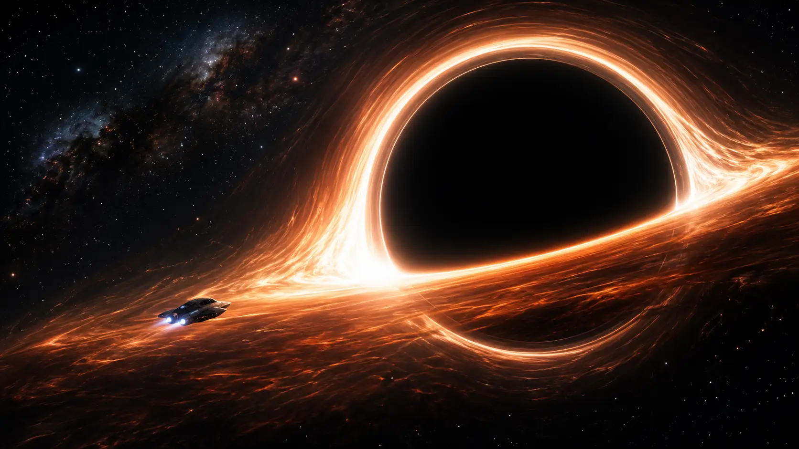
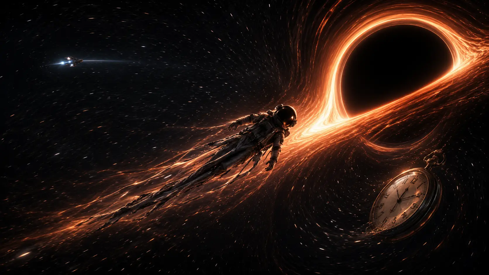
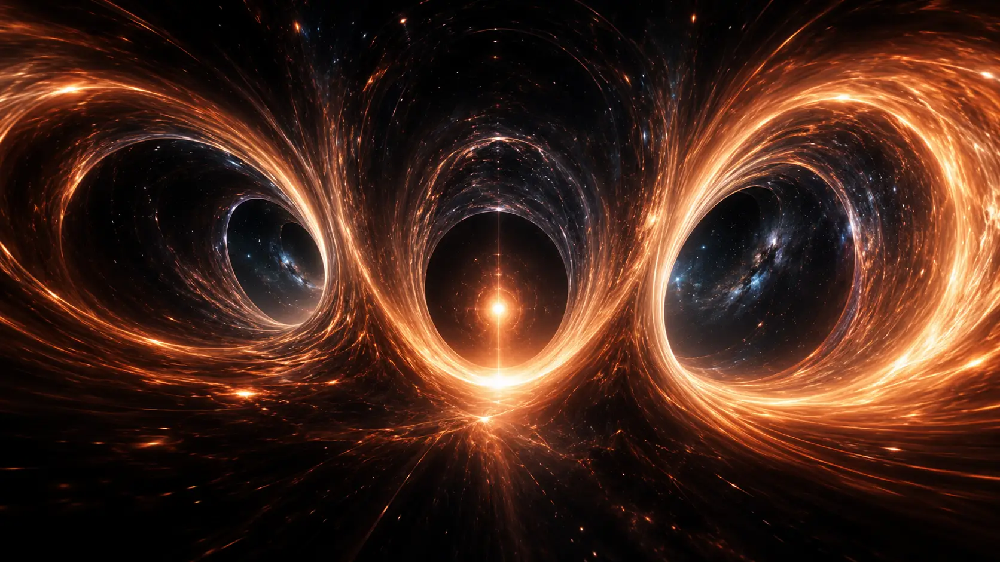
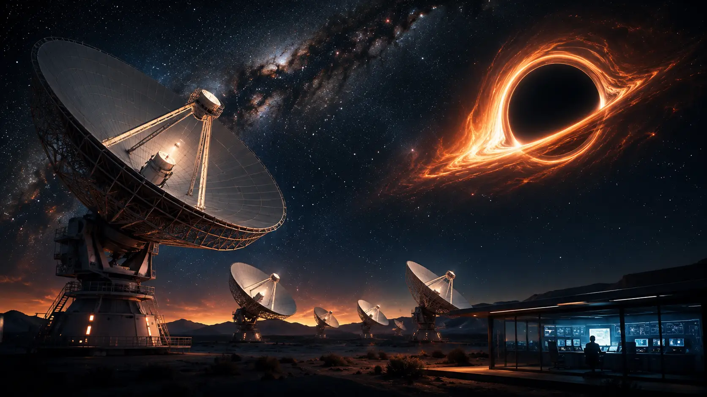

1. The Point of No Return
Imagine that somewhere in the universe, against every reasonable instinct, you are falling toward a black hole.
At first, there might be nothing obviously terrifying in front of you.
A black hole has no solid surface waiting to catch you. It does not look like a giant dark sphere floating in space in the ordinary sense. The black hole itself emits no light that can escape from within its boundary, so what you might actually see would depend enormously on its surroundings.
If the black hole were actively feeding, the view could be spectacular.
Gas and other material falling toward it could form a brilliant accretion disk, heated to extreme temperatures as matter spirals inward. Light from the disk would be severely distorted by the black hole's gravity, producing warped images around an apparently dark central region.
And somewhere ahead of you would lie a boundary that changes everything.
The event horizon.
What is a black hole?
A black hole is a region of spacetime where gravity has become so extreme that beyond a certain boundary, nothing can escape to the outside universe.
Not matter.
Not a spacecraft.
Not even light.
This does not mean that a black hole behaves like a cosmic vacuum cleaner, indiscriminately sucking in everything around it.
Far enough away, its gravity behaves like that of any other object with the same mass. If the Sun could somehow be replaced by a black hole with exactly the same mass, for example, Earth would continue orbiting at essentially the same distance. We would lose the Sun's light and heat, but the black hole would not suddenly drag Earth into itself simply because it was a black hole.
The extraordinary effects begin when you venture extremely close.
And our hypothetical traveler is doing exactly that.
The boundary you cannot return from
The event horizon is often called the point of no return.
That description is remarkably literal.
Once you cross it, every possible path you could take through spacetime leads farther inward. Escaping would require moving outward faster than light, something our current understanding of physics does not allow.
There is no engine powerful enough to reverse the journey.
No rocket capable of carrying you back.
And sending a message outward becomes impossible as well, because the light or radio waves carrying that message cannot escape once emitted from inside the horizon.
Crossing the event horizon therefore represents a profound transition.
The universe outside the black hole still exists.
You simply can no longer reach it.
Would you notice when you crossed it?
Here the story becomes stranger.
Science-fiction movies sometimes portray the event horizon as a violent physical barrier—a glowing wall or turbulent surface that a traveler dramatically crashes through.
For an isolated black hole, the event horizon itself is not a material surface.
And under the right circumstances, you might cross it without noticing anything locally extraordinary at that exact moment.
There would be no cosmic alarm.
No wall to break through.
No line painted across space announcing:
You are now inside a black hole.
For a sufficiently large black hole, the tidal forces at the event horizon can actually be relatively mild.
You could theoretically cross the horizon of a supermassive black hole while remaining intact, at least temporarily.
For a much smaller stellar-mass black hole, the situation would be dramatically different: tidal forces could become lethal before you ever reached the horizon.
This seemingly backwards result—that a larger black hole can offer a gentler horizon—is one of the strangest aspects of our journey, and we will return to it later.
Why can't light escape?
It is tempting to imagine light trying to fly upward from inside the black hole only to be pulled backward by gravity.
General relativity gives us a deeper picture.
A black hole does not merely exert an extraordinarily strong force within otherwise ordinary space. Its mass curves spacetime itself so severely that inside the event horizon, all future-directed paths lead deeper into the black hole.
Moving toward smaller distances from the center becomes, in a sense, as unavoidable as moving toward the future.
That is why crossing the horizon is fundamentally different from falling toward an ordinary planet or star.
On Earth, you can always imagine building a sufficiently powerful rocket and escaping.
Inside a black hole's event horizon, there is no outward route available.
But reaching the horizon may already be dangerous
Long before we ask what happens inside, our traveler has another problem.
Gravity does not pull equally strongly on every part of an extended object.
If you were falling feet-first toward a black hole, your feet would be slightly closer to it than your head.
That means your feet would experience a stronger gravitational pull.
Near an ordinary object, this difference is tiny.
Near a black hole, it can become enormous.
The result is a tidal force that stretches objects along the direction of the black hole while squeezing them in the perpendicular directions.
Given sufficiently extreme conditions, those forces can tear apart stars.
They can destroy planets.
And they could stretch a human body into a long stream of matter.
Physicists have an unusually memorable name for this process:
spaghettification.
Whether it happens before or after you cross the event horizon depends strongly on the mass of the black hole.
Either way, our journey has just become considerably less comfortable.
There is no coming back
Suppose, however, that we choose an enormous supermassive black hole and somehow protect our traveler from every other danger surrounding it.
We fall.
The event horizon grows closer.
And eventually...
we cross it.
At that moment, the journey becomes irreversible.
No observation made afterward can be transmitted back to people waiting safely outside.
From the perspective of the falling traveler, however, the journey does not simply stop at the horizon.
Their clock continues ticking.
Their fall continues.
And ahead lies a region of spacetime that no human being has ever observed directly—and from which no information can return to tell us what happened.
But before crossing that boundary, there would be something extraordinary to see.
The black hole would distort light, space and even our perception of time in ways that have no equivalent in ordinary human experience.
So before we fall any farther, there is another question to answer:
What would a black hole actually look like as you approached it?
2. What Would You See as You Approached?
As you fall toward a black hole, the first thing to understand is that you would not simply see a perfectly black sphere growing larger in front of you.
The view could be far stranger.
A black hole dramatically distorts the paths of light around it. Background stars can appear warped and displaced. Light from material behind the black hole can bend around it and reach your eyes from unexpected directions. A glowing accretion disk can appear duplicated, stretched and folded around the darkness.
The closer you get, the less the universe resembles the sky you left behind.
You would be watching spacetime itself reshape your view of reality.
The black hole itself would remain dark
A black hole does not emit ordinary light from inside its event horizon.
Once light crosses that boundary, it cannot escape and travel back toward you.
What you see as the dark central region is therefore not a solid surface.
It is associated with the black hole's shadow—a dark region created because light traveling sufficiently close to the black hole is captured rather than reaching the observer.
The shadow is actually larger in apparent size than the event horizon itself because the black hole's gravity bends and captures light traveling nearby.
Against an otherwise dark background, an isolated black hole could therefore be extremely difficult to see.
But place luminous matter around it, and the situation changes completely.
The accretion disk could be spectacular
Many black holes exist in environments where gas, dust or material from nearby stars falls toward them.
This matter does not necessarily plunge straight in.
Instead, it can orbit the black hole, forming a flattened structure called an accretion disk.
As material spirals inward, it becomes extraordinarily hot and can produce enormous amounts of radiation.
So although the black hole itself is dark, its surroundings can be among the brightest environments in the universe.
Approaching such a black hole could therefore mean seeing a brilliant disk of glowing matter wrapped around an apparently dark center.
But it would not look like an ordinary flat disk.
The black hole would visually distort it almost beyond recognition.
You could see the back of the disk
This is where gravitational lensing creates one of the strangest sights of the journey.
According to general relativity, mass curves spacetime, and light follows paths through that curved geometry.
Near a black hole, the curvature becomes extreme.
Light emitted from the far side of the accretion disk can bend around the black hole before reaching you.
As a result, material that should normally be hidden behind the black hole can become visible.
The far side of the disk can appear to curve upward above the black hole.
Light from beneath it can bend around and appear below.
You could effectively see multiple distorted portions of the same disk simultaneously.
The result resembles a luminous structure wrapping around a central darkness—even though the physical accretion disk itself may be comparatively thin and flat.
This is not an artistic trick invented for science fiction.
It is a consequence of light traveling through severely curved spacetime.
Some light could orbit the black hole
Closer still, the visual effects become even more extreme.
Certain photons can travel around the black hole before eventually escaping toward an observer.
This produces narrow structures known as photon rings.
Each ring contains light that has traveled an increasingly complicated path around the black hole.
Some photons may circle it before escaping.
Others can make additional trips.
The resulting images become progressively thinner and more compressed.
In principle, these rings contain repeated, distorted images of the surrounding universe and accretion disk.
You would therefore not simply see one image of the environment around the black hole.
Gravity could deliver multiple versions of it to your eyes along different paths.
The universe behind you would become distorted too
The black hole would not only distort things located close to it.
It would also alter your view of the distant universe.
Stars and galaxies whose light passes near the black hole would appear displaced, stretched or duplicated through gravitational lensing.
As you continued falling, the pattern would constantly change.
NASA simulations of a plunge toward a supermassive black hole show the background sky becoming increasingly warped and producing multiple and even mirror-like images as photons travel along different trajectories through curved spacetime.
The familiar geometry of the night sky would gradually disappear.
Stars that should occupy widely separated positions could appear squeezed into unexpected regions of your field of view.
The universe would still be there.
But the paths its light takes to reach you would have become profoundly distorted.
Motion would change what you see
There is another effect that has nothing to do with the black hole being dark.
You are falling extremely fast.
As your speed increases toward a substantial fraction of the speed of light, relativistic effects begin altering the incoming light.
Radiation arriving from the direction you are moving toward becomes blueshifted—its wavelength is compressed toward higher frequencies.
Light from behind you becomes redshifted toward lower frequencies.
Relativistic motion also changes apparent brightness.
NASA's simulated plunge toward a supermassive black hole shows the accretion disk and background stars becoming brighter and whiter in the direction of travel as the falling camera accelerates.
At extreme speeds, your view of the universe would therefore be altered simultaneously by two enormous effects:
the curvature of spacetime around the black hole and your own relativistic motion through it.
Would the black hole fill your entire view?
Eventually, the dark region associated with the black hole would occupy an increasingly large part of your visual field.
But the transformation would not simply resemble a black circle expanding until everything disappeared.
Light would continue reaching you along increasingly distorted trajectories.
Images of the accretion disk and surrounding universe would bend, compress and rearrange themselves around the darkness.
In NASA's 2024 simulation of a fall into a non-rotating supermassive black hole, the camera approaches the event horizon while the surrounding disk, photon rings and starry background become increasingly distorted.
After crossing the horizon, light from the outside universe can still reach the falling observer for a time.
This is an important and counterintuitive point.
Crossing the event horizon does not instantly make the entire universe outside disappear.
Light can still fall inward toward you.
What changes is that you can no longer send anything back out.
You can continue seeing portions of the universe you have left behind even though that universe can no longer receive a signal from you.
Would you see yourself cross the event horizon?
If you were the falling traveler, there would not necessarily be a dramatic visual marker announcing the exact moment you crossed the horizon.
For a sufficiently massive black hole, you could pass through that boundary while your own clock continued normally.
Someone watching you from far away would describe the situation very differently.
Signals coming from you would become increasingly delayed and redshifted as you approached the horizon.
To the distant observer, your fall would appear to slow dramatically.
From your own perspective, however, you would continue inward.
This apparent contradiction is one of the most famous consequences of relativity around black holes—and it deserves its own explanation later in our journey.
A view no human has ever seen
Everything described here comes from our best physical theories and increasingly sophisticated computer simulations.
No human being has traveled close to a black hole.
No camera has flown beside an event horizon.
And the famous images produced by the Event Horizon Telescope do not show the view that a traveler would personally experience while falling inward.
Instead, scientists use Einstein's general relativity to calculate how light should travel through the intensely curved spacetime surrounding a black hole.
Modern simulations can trace billions of photons along those paths and reconstruct the view that physics predicts an observer would see.
The result is one of the strangest landscapes imaginable:
a dark region surrounded by warped light;
a glowing disk appearing above and below itself;
repeated images produced by photons looping around the black hole;
stars displaced across the sky;
and an entire universe increasingly distorted as you fall toward a boundary from which there is no return.
It might be spectacular.
But you would have very little time to enjoy the view.
Because while gravity is distorting the light around you, it is also beginning to act very differently on your feet and your head.
And that brings us to one of the most infamous consequences of falling toward a black hole:
Would you really be stretched into spaghetti?
3. Would You Be Turned Into Spaghetti?
Yes.
Under the right circumstances, falling toward a black hole could literally stretch your body into an extraordinarily long, thin stream of matter.
Physicists call the process spaghettification.
The name sounds almost comical.
The physics behind it is anything but.
Spaghettification is caused by tidal forces—differences in gravitational pull between different parts of an object.
And near a black hole, those differences can become catastrophic.
Your feet would fall faster than your head
Imagine falling feet-first toward a black hole.
Your feet are slightly closer to the black hole than your head.
Normally, that difference of perhaps two meters would be insignificant.
Near a black hole, it can become deadly.
Because gravitational strength increases as you move closer to the black hole, your feet experience a stronger gravitational acceleration than your head.
Your feet are therefore pulled inward more strongly.
Your head follows slightly less strongly.
The result is that your body begins to stretch along the direction of the fall.
At the same time, gravity squeezes you from the sides.
You become longer in one direction and narrower in the others.
Hence the memorable name:
spaghettification.
It would not stop at the human scale
Unfortunately, the process does not simply stretch your body like rubber.
As the tidal forces increase, they eventually become stronger than the forces holding your body together.
Bones fracture.
Muscles and organs are torn apart.
Cells can no longer remain intact.
Continue deeper and the tidal forces become powerful enough to disrupt structures on progressively smaller scales.
Your body would cease to exist as a recognizable human being.
The material that once formed you would be stretched into an increasingly elongated stream falling toward the black hole.
Astronomers have actually observed a cosmic version of this process happening to stars.
When a star passes too close to a black hole, tidal forces can tear it apart in what astronomers call a tidal disruption event.
The stellar material becomes stretched into streams, some of which can orbit the black hole, collide, heat up and produce brilliant radiation detectable across enormous cosmic distances.
A black hole can therefore spaghettify something far larger than a human body.
It can dismantle an entire star.
But here comes the surprising part
You might reasonably assume that the larger the black hole, the more violently it would tear you apart at its event horizon.
The opposite can be true.
The event horizon of a supermassive black hole can actually be much gentler than the horizon of a smaller stellar-mass black hole.
This sounds contradictory.
A supermassive black hole may contain millions or billions of times the mass of the Sun.
How could approaching something so enormous be safer?
The answer lies in where its event horizon is located.
Bigger black hole, larger horizon
For a non-rotating black hole, the size of the event horizon increases directly with its mass.
A black hole ten times more massive has an event horizon roughly ten times larger.
A supermassive black hole therefore has an enormous horizon.
And because you cross that horizon much farther from the central region than you would for a small black hole, the difference in gravitational pull between your head and feet can be much smaller there.
What matters for spaghettification is not simply how strong gravity is.
It is how rapidly gravity changes across your body.
That gradient is what produces the destructive tidal force.
At the horizon of a small black hole, the gradient can be enormous.
At the horizon of a sufficiently massive black hole, it can be surprisingly modest.
Falling into a stellar-mass black hole
Consider a black hole formed from the collapse of a massive star.
Its event horizon may span only tens of kilometers.
To reach that horizon, you have to approach extremely close to the black hole's central region.
By then, the tidal difference between your feet and head could already be overwhelming.
You would likely be spaghettified before crossing the event horizon.
There would be no intact traveler calmly passing through the point of no return.
The black hole would have destroyed you first.
Falling into a supermassive black hole
Now imagine falling toward a black hole millions of times the mass of the Sun.
Its event horizon can extend across millions of kilometers.
At that boundary, tidal forces can be weak enough that a human-sized traveler would not necessarily notice anything catastrophic at the precise moment of crossing.
You could theoretically pass through the event horizon alive and intact.
For a while.
That last qualification matters enormously.
Crossing the horizon does not save you from spaghettification.
It merely postpones it.
Once inside, you continue falling toward regions where the curvature of spacetime becomes increasingly extreme.
The tidal forces grow.
Eventually they become lethal.
And because you have already crossed the event horizon, there is no possible route back out.
A supermassive black hole might therefore allow you to survive the crossing.
It does not provide a path to survival.
What about the black hole at the center of our galaxy?
At the heart of the Milky Way lies Sagittarius A*, a supermassive black hole containing roughly four million times the mass of the Sun.
Its event horizon is enormous compared with that of a stellar-mass black hole.
A hypothetical traveler falling toward Sagittarius A* could therefore encounter much weaker tidal forces at its horizon than someone approaching a small black hole.
In principle, that traveler could cross the event horizon before being torn apart.
Of course, this assumes an idealized journey.
Real black holes may be surrounded by hot gas, radiation, magnetic fields and other hazards capable of killing a traveler long before tidal forces become the main concern.
But from the standpoint of the black hole's gravity alone, the strange conclusion remains:
the larger black hole can offer the gentler entrance.
Can we calculate when spaghettification begins?
Yes, at least approximately.
Physicists can calculate the tidal acceleration across an object by considering the black hole's mass, the object's size and its distance from the black hole.
As the distance decreases, the tidal force increases extremely rapidly.
For a person, there would eventually be a point where the difference in gravitational acceleration across the body becomes physically destructive.
The exact moment would depend on several factors:
the mass of the black hole;
your orientation;
your body size;
the trajectory of your fall;
and how much force the human body could withstand.
There is therefore no universal distance at which every black hole turns every object into spaghetti.
The outcome depends strongly on the black hole itself.
Spaghettification reveals something deeper
As bizarre as the term sounds, spaghettification demonstrates one of the most important ideas in gravitational physics.
Gravity is not always about how strongly an entire object is pulled.
Sometimes what matters most is the difference in gravity from one place to another.
The Moon's gravitational pull produces tides on Earth through exactly this general principle.
The difference is one of scale.
The Moon slightly stretches Earth's oceans.
A black hole can stretch a star until the star ceases to exist.
And somewhere between those extremes lies our unfortunate traveler.
So would you become spaghetti?
If you fell toward a sufficiently small black hole:
probably before reaching the event horizon.
If you fell toward a supermassive black hole:
probably after crossing it.
Either way, if you continue toward the black hole's interior, tidal forces eventually win.
But suppose you are falling into an enormous black hole and have not yet been destroyed.
Your body is still intact.
Your watch is still ticking.
And you are approaching the event horizon.
Someone watching from far away sees something very strange happening to you.
You appear to slow down.
Your light becomes redder.
And from their perspective, you seem to approach the horizon without ever quite crossing it.
But according to your own clock, you cross it normally.
How can both descriptions be true?
That brings us to perhaps the strangest part of the journey:
Would time really stop at the edge of a black hole?

4. Would Time Really Stop?
Imagine that you are still falling toward our supermassive black hole.
You look at your watch.
One second passes.
Then another.
Then another.
Nothing seems wrong with time.
Your heart continues beating. Your thoughts continue normally. Your spacecraft's clocks keep ticking.
Eventually, assuming you survive the journey, you cross the event horizon.
And according to your own clock, you do so after a finite amount of time.
But someone watching you from far away tells a completely different story.
To them, you appear to move more and more slowly as you approach the black hole.
Your clock seems to tick slower.
The light coming from you becomes increasingly red and faint.
And as you approach the event horizon, your image seems to freeze near its edge.
So who is correct?
Both observers are.
Welcome to gravitational time dilation.
Gravity changes the passage of time
One of the profound predictions of Einstein's general theory of relativity is that gravity affects time.
Clocks located in different gravitational environments do not necessarily accumulate the same amount of elapsed time.
Closer to a massive object, where gravitational effects are stronger, a clock can run more slowly relative to one farther away.
This phenomenon is called gravitational time dilation.
Black holes provide the most extreme environments in which to explore it.
As you approach the event horizon, the difference between your clock and the time assigned by a distant observer becomes enormous.
But this does not mean that you personally feel your time slowing down.
Your own clock always behaves normally from your local perspective.
One second still feels like one second.
Time dilation isn't exclusive to black holes
This effect may sound like something that could exist only in the most extreme regions of the universe.
It does not.
Gravitational time dilation occurs around Earth too.
The effect is tiny, but measurable.
Clocks at different gravitational potentials can accumulate slightly different amounts of time.
Modern technologies have to account for relativistic effects when extremely precise timing is required.
Black holes do not introduce an entirely new law of nature.
They push a real feature of spacetime to an extraordinary extreme.
What would someone far away see?
Now imagine a friend remaining aboard a spacecraft at a safe distance while watching you fall.
At first, everything looks relatively normal.
But as you descend deeper into the black hole's gravitational field, the signals you send outward take increasingly extreme paths through curved spacetime.
Your movements appear slower.
Your clock appears to run more slowly.
The light reaching your friend becomes increasingly gravitationally redshifted.
Its wavelength stretches toward lower frequencies.
You also become progressively dimmer.
Eventually, rather than watching you cleanly pass through the event horizon, the distant observer sees your image become increasingly slowed, redshifted and faint.
In the idealized description of a non-rotating black hole, you appear to approach the horizon without ever being observed crossing it.
This is where the famous idea comes from that:
“time stops at a black hole.”
But that statement is dangerously incomplete.
You would not freeze
From your perspective, you continue falling.
Your watch keeps ticking.
Your body continues functioning—at least until the black hole's tidal forces become fatal.
And you reach and cross the event horizon in finite proper time, meaning the time measured by a clock traveling with you.
You do not encounter a point where your thoughts suddenly freeze.
You do not spend eternity hovering above the horizon.
And you do not see your own watch gradually stop.
The apparent freezing belongs to the description made using signals received far away.
It is not what the falling observer experiences.
Why does the distant observer never see you cross?
The answer involves the light carrying information from you to them.
Everything your friend knows about your journey arrives through photons.
As you approach the event horizon, photons emitted outward have increasing difficulty escaping the strongly curved spacetime around the black hole.
Successive signals arrive increasingly delayed and increasingly redshifted.
The information becomes stretched over longer and longer intervals.
So the distant observer does not receive a final clear image saying:
“Now you crossed the horizon.”
Instead, your visible image fades away.
In reality, therefore, your friend would not literally stare forever at a perfectly frozen photograph of you suspended above the black hole.
You would become extremely red, extremely dim and eventually effectively disappear from view.
A real NASA simulation demonstrates the difference
In 2024, NASA produced a detailed visualization of a camera falling toward a supermassive black hole containing about 4.3 million times the mass of the Sun, similar in scale to Sagittarius A* at the center of the Milky Way.
In the simulation, the falling camera takes roughly three hours of its own time to reach the event horizon after beginning the final plunge.
From the perspective associated with a distant observer, however, the camera appears to slow and freeze just outside the horizon.
The simulation tracks these different descriptions simultaneously.
It is a powerful demonstration that asking:
“How long does it take to reach the event horizon?”
has no meaningful answer until we specify:
According to whose clock?
Could you use a black hole to travel into the future?
Here things become even stranger.
You do not actually need to fall through the event horizon to exploit extreme time dilation.
Imagine traveling close to a black hole, remaining outside the horizon and then escaping.
If you could survive the environment and execute the necessary trajectory, less time could pass for you than for people remaining far away.
When you returned, they would have aged more than you.
NASA's 2024 simulation included exactly such a scenario.
Instead of falling through the horizon, a camera approaches the black hole, orbits near it and then escapes.
For a six-hour round trip near the simulated black hole, the traveler returns approximately 36 minutes younger than colleagues who remained far away.
With more extreme conditions—particularly around a rapidly rotating black hole—the difference could become much larger.
This is not science-fiction time travel into the past.
It is relativistic travel into the future.
You simply experience less elapsed time than people elsewhere.
Could years pass outside while only hours pass for you?
In principle, sufficiently extreme relativistic conditions can produce enormous differences in elapsed time.
But achieving a dramatic scenario is much more complicated than simply hovering beside any black hole.
The amount of time dilation depends on factors including:
the black hole's mass;
its rotation;
your distance from it;
your velocity;
and whether a physically viable trajectory can actually be maintained.
Getting extremely close to an event horizon and then returning safely would present enormous practical and physical challenges.
A rapidly rotating black hole can permit orbital configurations very different from those around a non-rotating one, which is why rotation becomes important in discussions of extreme time dilation.
So the basic idea is real.
But not every spectacular scenario imagined in fiction is automatically physically achievable.
Would you see the entire future of the universe?
This is another popular misconception.
If the distant universe appears to evolve faster relative to you as you approach a black hole, perhaps you could look outward and watch billions of years pass.
Stars would be born and die.
Galaxies would evolve.
Maybe you could even witness the end of the universe before crossing the horizon.
For an ordinary fall into a non-rotating black hole:
No.
You do not see the entire infinite future of the universe compressed into your final moments.
Only light that can physically reach you before you encounter your fate can enter your past light cone.
Events occurring arbitrarily far into the external universe's future cannot somehow send their light backward through causality to reach you before you fall deeper inside.
The outside universe may appear altered and accelerated in complicated ways.
But falling through an event horizon is not a shortcut to watching eternity.
Two observers, two descriptions
This is perhaps the most important lesson.
Relativity does not provide one universal cosmic clock ticking identically everywhere.
Different observers following different paths through spacetime can accumulate different amounts of time.
For the distant observer:
you slow down;
your clock appears increasingly slow;
your light becomes redder;
and your image fades near the event horizon.
For you:
your clock behaves normally;
you reach the horizon in finite time;
you cross it;
and your journey continues inward.
Neither description is an illusion in the sense of being simply incorrect.
They arise from different observers measuring events along different paths through curved spacetime.
Crossing the horizon changes the question
And now something profound has happened.
Suppose our traveler chose a sufficiently massive black hole to survive the tidal forces at the horizon.
They have crossed it.
Their watch still ticks.
The outside universe has not magically disappeared.
And locally, there may have been no dramatic wall marking the crossing.
But there is one enormous difference.
They can never return.
Every future-directed path now carries them deeper into the black hole.
No radio transmission can escape.
No photograph can be sent home.
No account of what happens next can reach the outside universe.
For the first time in our journey, we are entering a region that astronomy cannot directly observe from outside.
So if crossing the event horizon itself does not necessarily kill you...
how long could you actually survive once you were inside?
5. Could You Survive Crossing the Event Horizon?
You have reached the point of no return.
Your spacecraft crosses the event horizon.
There is no collision.
No solid surface.
No invisible wall suddenly crushes you.
And if the black hole is sufficiently massive, something extraordinary may happen:
you could still be alive.
This is one of the most counterintuitive facts about black holes.
Crossing an event horizon does not automatically mean instant death.
The event horizon is a boundary in spacetime, not a physical object. Under the right conditions, a traveler could pass through it without experiencing anything locally dramatic at that exact moment.
But survival at the horizon and survival inside the black hole are two very different things.
Once you cross that boundary, your fate is sealed.
The event horizon itself doesn't kill you
It is easy to imagine the event horizon as the dangerous part of a black hole.
In reality, the danger comes from the environment and from the increasingly extreme curvature of spacetime—not from touching the horizon itself.
For an idealized, isolated supermassive black hole, the tidal forces at the event horizon can be relatively weak.
If the black hole is large enough, the difference in gravitational pull between your head and feet may still be small enough for your body to remain intact as you cross.
Your watch keeps ticking.
Your heart keeps beating.
Locally, physics continues behaving normally.
There is no sign floating in space announcing that escape has just become impossible.
And yet you have crossed the most consequential boundary in the universe.
You might not even know the exact moment
This follows from an important principle in general relativity.
In a sufficiently small region around a freely falling observer, gravity can locally resemble ordinary free fall.
For a large enough black hole, nothing singular has to occur at the event horizon itself.
You could therefore cross it without detecting a sudden physical discontinuity.
If you were enclosed inside a spacecraft with no external reference and were somehow protected from other hazards, there might be no immediate local experiment telling you:
“You just crossed the event horizon.”
The dramatic change is not that your immediate surroundings suddenly become infinitely violent.
The dramatic change is causal.
Before crossing the horizon, escape remained possible in principle.
After crossing it, escape is impossible.
Could you turn around immediately?
No.
This is where everyday intuition fails.
Suppose you cross the horizon by only a tiny distance and immediately fire the most powerful rocket imaginable.
Could you simply reverse direction?
No.
Once inside the event horizon, there is no future-directed trajectory that leads back outside.
This is not merely because your rocket is too weak.
Even light cannot escape.
Adding a more powerful engine does not solve the problem because the problem is no longer simply one of overcoming a gravitational force.
The geometry of spacetime itself has changed the available paths into your future.
Every physically allowed future takes you deeper inside.
Could you at least send a final message home?
Before crossing the event horizon:
yes.
You could transmit signals outward, although they would become increasingly redshifted and delayed as seen by distant observers.
After crossing:
no message you send can reach the external universe.
You could switch on a radio transmitter.
Fire a laser outward.
Broadcast every measurement your instruments collect.
None of that information could cross the event horizon in the outward direction.
This creates one of the great frustrations of black-hole physics.
A traveler could theoretically make observations after crossing the horizon.
But those observations could never be reported back to scientists outside.
You might discover something extraordinary.
The rest of humanity would never receive the message.
How long would you survive?
Now we reach the uncomfortable part.
Crossing the event horizon does not immediately destroy you in the supermassive-black-hole scenario.
But you continue falling.
And the tidal forces continue increasing.
Eventually, the difference in gravitational pull across your body becomes catastrophic.
Spaghettification begins.
The amount of time available depends strongly on the black hole.
For the supermassive black hole used in NASA's 2024 visualization—about 4.3 million times the mass of the Sun—the simulated camera crosses the event horizon and survives for another 12.8 seconds before tidal forces destroy it.
After that, the remaining plunge toward the central region occurs extraordinarily quickly in the simulation.
So in that particular scenario, crossing the horizon would not mean instant destruction.
It would mean approximately thirteen final seconds.
Could an even larger black hole give you more time?
Yes.
For a larger supermassive black hole, the event horizon lies farther from the central region, and the tidal forces at the horizon can be even weaker.
That can increase the amount of proper time available to an infalling traveler after crossing.
For an idealized non-rotating black hole, the characteristic timescale between the horizon and the central singularity grows with the black hole's mass.
So a sufficiently enormous black hole could provide considerably more than a few seconds inside.
But this does not change the final outcome.
More time is not the same as an escape route.
Whether you have seconds, minutes or potentially longer depends on the black hole and your trajectory.
Once the horizon is behind you, however, the remaining time is finite.
Real black holes may kill you much earlier
So far, our traveler has enjoyed an unrealistically clean journey.
Real astrophysical black holes can be surrounded by some of the most hostile environments in the universe.
An actively feeding black hole may possess a scorching accretion disk containing matter heated to enormous temperatures.
That material can produce intense radiation, including X-rays.
Powerful magnetic fields can accelerate particles to extreme energies.
Some black-hole systems launch enormous relativistic jets capable of extending far beyond their host environments.
Trying to approach such an active black hole could therefore expose you to lethal radiation and high-energy particles long before crossing the event horizon.
For our thought experiment, the safest choice would be a very massive and relatively quiet black hole with little surrounding material.
Even then, the horizon is only the beginning of the final stage.
What would you see after crossing?
Perhaps surprisingly, the outside universe would not instantly vanish behind you.
Light from outside can still fall inward and reach you.
You could continue receiving photons from stars, galaxies and the environment you left behind.
What you cannot do is send information back to them.
As you continue inward, the geometry of your observable surroundings becomes increasingly distorted.
Directions that once seemed intuitively separate become difficult to interpret using ordinary ideas of “up,” “down,” “in” and “out.”
The event horizon has placed you inside a region where every possible future ultimately points toward the interior.
You can still look outward.
You simply cannot go outward.
Could another astronaut rescue you?
Imagine that another spacecraft watches you cross and immediately decides to follow.
Could they catch you?
Potentially, yes—if they also cross the event horizon.
Two observers falling into the same black hole can, under suitable circumstances, still interact after crossing.
They could exchange signals locally while causality permits.
But there is an obvious problem.
Your rescuer has not rescued you.
They have simply joined you.
Neither spacecraft can return to the external universe.
A rescue mission that crosses the event horizon becomes a second one-way journey.
What about a rotating black hole?
Real astrophysical black holes are expected to rotate.
Rotation makes their internal geometry much more complicated than the idealized non-rotating black hole we have primarily used so far.
A rotating black hole is described by the Kerr solution of general relativity and possesses features absent from the simpler Schwarzschild case, including an ergosphere outside the event horizon and a more complex mathematical interior.
Some mathematical extensions of rotating black-hole solutions contain extraordinarily strange possibilities.
But this is where we need to be careful.
The idealized equations describing the deep interior do not automatically tell us what a real astrophysical black hole would allow a human traveler to experience.
Instabilities, infalling radiation and quantum effects may profoundly alter the classical picture.
So although rotation matters enormously to black-hole physics, it does not currently provide us with a scientifically established escape route after crossing the horizon.
Survival is not escape
This distinction is the key to the entire question.
Could you survive crossing the event horizon?
For a sufficiently large black hole, in principle:
yes.
Could you survive indefinitely inside?
According to our standard classical description:
no.
Could you turn around and escape after crossing?
No.
Could you tell the outside universe what you discovered?
No.
Crossing alive would therefore create perhaps the strangest situation imaginable.
For a brief period, you could become an observer inside a region of the universe that no external telescope can ever directly see.
You could continue thinking.
Continue measuring.
Continue watching light fall in from the universe outside.
But every second would carry you deeper into a region from which no information about your experience could ever return.
And eventually, the tidal forces would become overwhelming.
The safest black hole is still a black hole
Our journey has now revealed a bizarre rule.
If you absolutely had to fall into a black hole, you would prefer a supermassive one.
A smaller stellar-mass black hole could tear you apart before you even reached its horizon.
A sufficiently massive one might allow you to cross alive.
That does not make the larger black hole safe.
It merely delays your destruction.
And this raises an important question.
We have repeatedly compared small stellar-mass black holes with enormous supermassive ones, and their effects on our traveler are dramatically different.
So before going deeper into the interior, we need to understand why.
How can the larger and more massive black hole actually give you the gentler journey?
6. Stellar vs. Supermassive Black Holes
If you had to choose a black hole to fall into, which would you pick?
One containing ten times the mass of the Sun?
Or a monster containing millions—or even billions—of solar masses?
Common sense seems to suggest the smaller one.
Surely the gigantic black hole must be more dangerous.
But if your goal is to cross the event horizon alive, you should make the opposite choice.
You would want the supermassive black hole.
The reason reveals something fundamental about black holes:
mass, size and tidal forces do not scale in the way our everyday intuition expects.
Stellar-mass black holes: small but brutal
Stellar-mass black holes are the relatively small members of the black-hole family.
They can form when massive stars reach the end of their lives and their cores collapse, although black holes can also grow or form through mergers involving compact objects.
Their masses are typically measured in tens of times the mass of the Sun.
That sounds enormous—and it is.
But the extraordinary part is how compact they are.
A non-rotating black hole with ten times the Sun's mass would have a Schwarzschild radius of only about 30 kilometers.
Imagine compressing the mass of roughly ten Suns into a region whose event horizon could fit across a large metropolitan area.
That extreme compactness creates a vicious environment close to the horizon.
As you approach, the gravitational pull on your feet becomes dramatically stronger than the pull on your head.
The resulting tidal forces increase so rapidly that a human traveler would likely be torn apart before reaching the event horizon.
A stellar-mass black hole may be the smaller option.
But for our journey, it is the more violent entrance.
Supermassive black holes: the monsters at galactic centers
At the opposite end of the familiar black-hole scale are supermassive black holes.
These objects contain hundreds of thousands, millions or even billions of times the mass of the Sun.
They are found at the centers of most large galaxies.
Our own Milky Way contains one:
Sagittarius A*.
It has a mass of approximately four million Suns.
And it is actually modest compared with some of the giants elsewhere in the universe.
At the center of the galaxy M87 lies another famous supermassive black hole, M87*, with a mass of roughly 6.5 billion Suns.
This was the first black hole whose shadow was directly imaged by the Event Horizon Telescope, with the historic image released in 2019.
These are objects of almost incomprehensible scale.
And yet, at their event horizons, they can treat our hypothetical traveler more gently than a stellar-mass black hole.
More mass means a larger event horizon
For a simple non-rotating black hole, the radius of the event horizon—the Schwarzschild radius—is directly proportional to its mass.
The relationship is approximately:
3 kilometers for every solar mass.
A black hole with the mass of the Sun would therefore have a Schwarzschild radius of roughly 3 kilometers.
Ten solar masses:
roughly 30 kilometers.
One million solar masses:
roughly 3 million kilometers.
One billion solar masses:
roughly 3 billion kilometers.
As the black hole becomes more massive, its horizon expands proportionally.
This is crucial.
A supermassive black hole does not simply contain vastly more mass.
Its event horizon is also vastly farther from the central region.
And that changes what you experience when crossing it.
Why the giant can be gentler
Remember what actually causes spaghettification.
It is not simply gravity.
It is the difference in gravitational pull across your body.
Your feet are closer to the black hole than your head, so they are pulled differently.
Near the horizon of a small black hole, distances change significantly relative to the black hole's scale over the length of your body.
The tidal gradient can therefore be enormous.
But the horizon of a supermassive black hole lies much farther out.
Across the two meters separating your head and feet, the gravitational field changes proportionally much less.
The result:
weaker tidal forces at the horizon.
In fact, for a non-rotating black hole, the characteristic tidal forces at the event horizon become weaker as the black hole's mass increases.
So although the supermassive black hole contains vastly more mass, the experience of crossing its horizon can be considerably less violent.
Compare two journeys
Imagine two identical astronauts.
One falls toward a stellar-mass black hole.
The other falls toward a supermassive one.
The first astronaut approaches an event horizon only tens of kilometers in radius.
Before reaching it, the difference in gravitational acceleration between their head and feet becomes catastrophic.
Spaghettification begins.
The astronaut is destroyed outside the horizon.
Now consider the second astronaut approaching a black hole millions of times the mass of the Sun.
Its event horizon extends across millions of kilometers.
At the horizon, the tidal difference across the astronaut's body can still be survivable.
They cross intact.
Nothing dramatic necessarily happens at the precise instant of crossing.
Only deeper inside do the tidal forces become fatal.
Both journeys end badly.
But they end in fundamentally different places.
Sagittarius A* gives us a useful example
NASA's 2024 black-hole plunge simulation used a supermassive black hole containing 4.3 million solar masses, approximately comparable to Sagittarius A*.
Its event horizon spans about 25 million kilometers.
That is roughly 17 percent of the distance between Earth and the Sun.
The simulated traveler can cross this enormous horizon before being destroyed by tidal forces.
Now compare that with a typical stellar-mass black hole whose horizon may measure only tens of kilometers.
Both possess a point of no return.
But the physical scale of those boundaries could hardly be more different.
This is why simply saying that a black hole has “strong gravity” does not tell us enough about what falling into it would actually be like.
There is a middle ground
Nature may also contain black holes between these two extremes.
They are called intermediate-mass black holes.
Their expected masses lie between stellar and supermassive black holes, roughly from hundreds to tens of thousands—or perhaps hundreds of thousands—of solar masses depending on the classification used.
Astronomers have accumulated evidence for candidates, but these objects have historically been much harder to identify than either stellar-mass or supermassive black holes.
They are scientifically important because they may help explain how the enormous black holes at the centers of galaxies formed.
Did supermassive black holes begin as smaller seeds that repeatedly merged and accumulated matter?
Did some form directly from enormous concentrations of gas in the early universe?
Or did several pathways contribute?
Scientists are still investigating.
For our falling traveler, however, the general principle remains:
as the mass increases sufficiently, crossing the horizon before catastrophic tidal disruption becomes increasingly plausible.
How do supermassive black holes become so enormous?
This is one of the major unresolved questions in astrophysics.
Stellar-mass black holes have a relatively straightforward origin: massive stars and compact-object mergers can create them.
But producing a black hole with millions or billions of solar masses is much more challenging.
Astronomers have discovered enormous black holes surprisingly early in cosmic history, meaning some of them grew very rapidly.
Possible pathways include:
rapid accretion of enormous quantities of gas;
repeated mergers between smaller black holes;
growth from massive early black-hole seeds;
or combinations of these processes.
We know that supermassive black holes exist.
We can measure their influence on surrounding stars and gas.
What remains uncertain is exactly how the first generations grew so large so quickly.
A black hole does not swallow its entire galaxy
The enormous mass of a supermassive black hole can also create another misconception.
If one sits at the center of a galaxy, why doesn't it simply swallow everything?
Because black holes do not behave like cosmic vacuum cleaners.
Far from the event horizon, gravity behaves according to the object's mass just as it does for other massive bodies.
Stars can orbit a black hole without falling into it.
The stars near Sagittarius A*, for example, follow orbits around the invisible central mass.
They are not inevitably sucked inward.
A supermassive black hole may dominate the dynamics of its immediate surroundings, but an entire galaxy extends vastly farther.
The black hole at its center does not simply consume everything within it.
Bigger does not always mean more dangerous
This is perhaps the most counterintuitive lesson of comparing black holes.
A supermassive black hole contains vastly more mass.
Its influence can shape the environment at the heart of a galaxy.
Matter falling toward an active one can produce enormous amounts of radiation.
Some launch relativistic jets stretching across extraordinary distances.
Yet when considering tidal forces specifically at the event horizon, bigger can mean gentler.
A small black hole can destroy you before you cross.
A giant can let you enter alive.
The difference is not because the supermassive black hole has weaker gravity in some simple sense.
It is because its enormous event horizon changes how rapidly the gravitational field varies across your body at the point where you cross.
Choose carefully
So if our impossible journey came with a choice, the answer is clear.
Avoid the stellar-mass black hole.
Choose an enormous, quiet supermassive one.
You might cross the event horizon intact.
You might have precious time to observe what happens inside.
But there is a catch.
The event horizon was only the boundary.
It was not the destination.
Once inside, you continue falling toward regions where spacetime becomes increasingly extreme.
And now there is no path back to the universe outside.
We have finally reached the part of our journey that no telescope can show us directly.
What actually happens after you cross the event horizon?

7. What Happens After You Cross the Event Horizon?
You have crossed the event horizon.
For the first time in our journey, the outside universe can no longer receive information about what happens to you.
No telescope can watch your journey from outside.
No radio transmission you send can escape.
No future astronaut could enter, record what happens and then return with the data.
And yet, according to general relativity, your journey continues.
The event horizon was not the end.
It was the point beyond which the end became unavoidable.
There is no wall on the other side
Crossing the event horizon does not transport you into a completely separate place.
There is no physical membrane waiting behind it.
No tunnel suddenly appears.
And there is no empty chamber inside the black hole.
You simply continue following your path through spacetime.
For a sufficiently massive black hole, the immediate environment might initially seem surprisingly uneventful.
Your clock still ticks.
Light can still reach you from elsewhere.
If you were traveling with another nearby observer, you could still communicate locally.
But something fundamental has changed:
every future-directed path available to you remains inside the black hole.
You are no longer choosing whether to move deeper inward.
Moving deeper has become part of your future.
“Inward” becomes unavoidable
Outside a black hole, you can choose different directions.
You can move toward the black hole.
You can move away from it.
You can orbit it.
With sufficient propulsion and the right trajectory, you can escape.
Inside the event horizon of an idealized non-rotating black hole, this freedom disappears in a profound way.
General relativity tells us that the geometry of spacetime is arranged so that decreasing distance from the center becomes unavoidable for any future-directed traveler.
This is sometimes explained by saying that space and time switch roles inside the horizon.
That phrase can be useful, but it is also an oversimplification.
A more accurate way to think about it is this:
outside the horizon, moving inward is a possible direction through space.
Inside, progressing toward smaller radius becomes as unavoidable as progressing toward the future.
You cannot decide to stop moving toward tomorrow.
Inside the black hole, you cannot choose a future that avoids the deeper interior.
Could an incredibly powerful rocket save you?
No.
Suppose your spacecraft contains an engine far more powerful than anything humanity could ever build.
Immediately after crossing the horizon, you turn it outward and accelerate as hard as possible.
You still cannot escape.
The problem is not that the black hole's gravity simply overwhelms the engine.
The problem is that there is no outward future-directed path that crosses the event horizon back into the external universe.
Even a beam of light aimed “outward” cannot accomplish it.
Locally, the light still travels at the speed of light.
But the geometry of spacetime ensures that its future remains inside the horizon.
This is why the event horizon is genuinely a point of no return.
Could you hover inside the black hole?
Outside a black hole, a sufficiently powerful spacecraft can theoretically attempt to maintain a fixed position—although hovering extremely close to the horizon would require enormous acceleration.
At the horizon itself, the required acceleration for a stationary observer becomes unbounded in the idealized Schwarzschild description.
Inside the horizon, the idea of simply hovering at a fixed radius no longer corresponds to a physically possible stationary trajectory.
You cannot stop and wait.
You cannot establish a permanent research station.
You cannot park your spacecraft a few kilometers inside the horizon and study the interior indefinitely.
The journey inward continues.
Could you still see the outside universe?
Yes.
At least for a while.
This is one of the strangest aspects of the journey.
Crossing the event horizon prevents signals from traveling from you to the outside universe.
But it does not prevent light from the outside universe from falling inward toward you.
Photons emitted by stars, galaxies or your hypothetical companions outside can cross the horizon and reach you.
So you would not instantly see complete darkness.
The universe you left behind could remain visible, although increasingly distorted by the extreme geometry and your motion.
This creates a one-way relationship.
The universe can continue sending information to you.
You can no longer send information back.
What would happen to the light around you?
As you fall deeper, your view becomes increasingly difficult to describe using ordinary intuition.
Light from different directions follows severely curved paths.
Some photons reaching you may have traveled around the black hole before entering your eyes.
Images of the external universe can become compressed and distorted into unusual regions of your visual field.
The exact appearance depends on the black hole's properties, your trajectory and the light sources around it.
For a rotating black hole, the geometry becomes even more complicated because spacetime itself is dragged around by the black hole's rotation.
But regardless of the visual details, one thing remains true:
your observable universe is becoming increasingly constrained by the geometry of the black hole.
How much time do you have?
Not forever.
Once inside the event horizon, a freely falling observer reaches the deeper interior in a finite amount of proper time.
The exact duration depends on the black hole's mass, rotation and your trajectory.
For a stellar-mass black hole, the available time can be extraordinarily short.
For a supermassive black hole, it can be considerably longer.
As we saw earlier, NASA's simulation of a plunge into a black hole containing about 4.3 million solar masses allowed the camera to survive approximately 12.8 seconds after crossing the horizon before tidal forces destroyed it.
For still larger black holes, characteristic interior timescales can increase with mass.
But no matter how large the black hole is, crossing the horizon does not grant unlimited time.
In the standard classical picture, your future remains finite.
Tidal forces eventually return with a vengeance
Perhaps you chose an enormous supermassive black hole precisely because its event horizon was gentle enough to cross alive.
That only delayed the problem.
As you continue inward, tidal forces grow.
The gravitational difference across your body becomes stronger.
Eventually, your feet and head can no longer remain together.
Spaghettification becomes unavoidable.
Your spacecraft is stretched.
Your body is destroyed.
Matter itself is subjected to increasingly extreme conditions.
Exactly how far classical descriptions remain physically meaningful as you approach the deepest region is another question entirely.
But long before we can worry about personally witnessing the ultimate center, ordinary human survival has ended.
What happens to your atoms?
This is where statements need to become increasingly cautious.
It is common to hear that a black hole will inevitably “rip you apart atom by atom” or even destroy matter down to its most fundamental particles.
Tidal forces certainly become enormous in the classical description as the singularity is approached.
But once curvature reaches regimes where quantum-gravity effects should become important, our current theories are incomplete.
General relativity is extraordinarily successful at describing gravity on large scales.
Quantum mechanics is extraordinarily successful at describing matter and interactions on microscopic scales.
But we do not yet possess a complete, experimentally verified theory of quantum gravity that unifies them in the extreme interior of a black hole.
So we can confidently predict that a human body would not survive.
We should be much more cautious when claiming exactly what ultimately happens to matter at the deepest level.
Could you avoid the center?
For the simplest type of black hole—a non-rotating, uncharged Schwarzschild black hole—classical general relativity gives you no escape from the central singularity.
Once inside the horizon, every future-directed timelike path ultimately encounters it.
But real black holes almost certainly rotate.
A rotating black hole is described by the Kerr geometry, whose mathematical interior is substantially more complicated.
The equations contain structures such as an inner horizon and a ring-like singularity, and idealized mathematical extensions can produce regions that sound almost like science fiction.
This has inspired claims that rotating black holes could lead to other universes or function as passages through spacetime.
But there is a major problem.
Real black holes may not resemble the perfect equations deep inside
The ideal Kerr solution describes an eternal, perfectly rotating black hole under highly idealized conditions.
Real astrophysical black holes formed through gravitational collapse.
They interact with matter and radiation.
They exist in a dynamic universe.
And the inner horizon predicted by the idealized rotating solution is expected to be highly unstable.
Small amounts of infalling radiation can become enormously amplified there through a phenomenon known as mass inflation.
This instability suggests that the elegant mathematical extensions of an ideal Kerr black hole may not provide a physically traversable route through a real one.
So although the equations contain exotic possibilities, we cannot responsibly tell our traveler:
“Just aim for the ring and you might emerge somewhere else.”
There is no observational evidence that a real black hole provides such an escape.
No one outside can know what you personally observe
This creates an unusual boundary for experimental science.
Astronomers can observe matter approaching black holes.
They can measure radiation from accretion disks.
They can detect gravitational waves from black-hole mergers.
They can image black-hole shadows.
They can test general relativity in increasingly extreme gravitational environments.
But the region beyond the event horizon is causally hidden from external observers.
Any direct measurements performed there remain trapped there.
Our understanding of the interior therefore comes from physical theory, mathematical consistency and indirect evidence—not from a probe that entered and transmitted its findings back to Earth.
The journey ends at the limits of our theories
According to classical general relativity, the falling traveler continues inward.
For a non-rotating black hole, the path leads inevitably toward the central singularity.
Curvature grows without bound in the classical equations.
Our traveler is destroyed by tidal forces.
And the mathematical description reaches a point where the theory itself signals that something is missing.
That last point is crucial.
A singularity is not necessarily best understood as a literal physical object sitting at the center of the black hole.
It may instead mark a boundary where classical general relativity can no longer provide a complete description of reality.
And that means our journey has finally reached a question even modern physics cannot answer with confidence.
We know what Einstein's equations predict.
But we do not yet know what nature actually does when gravity and quantum physics become simultaneously unavoidable.
So what really waits at the deepest heart of a black hole?
What happens at the singularity?
8. What Happens at the Singularity?
The traveler has crossed the event horizon.
Escape is impossible.
Tidal forces are growing.
And according to the simplest classical description of a black hole, every future path now leads toward something called a singularity.
It is often described as the place where all the black hole's mass is compressed into a point of infinite density.
That description appears everywhere.
But it hides one of the most important facts in modern physics:
we do not actually know what physically exists at the singularity.
The singularity is where general relativity—the theory that predicts black holes so successfully—reaches the limit of what it can tell us.
What does general relativity predict?
For a simple, non-rotating and uncharged black hole, Einstein's general theory of relativity predicts a central singularity.
As matter continues inward, spacetime curvature increases.
Approach the singularity in the classical mathematical description and certain measures of curvature grow without bound.
The equations eventually produce infinities.
This is why popular explanations often say that the singularity has:
infinite density;
infinite spacetime curvature;
and zero volume.
But physicists generally do not interpret these infinities as proof that nature literally contains a tiny point possessing physically measurable infinite quantities.
Instead, they are a warning.
Our theory has been pushed into a regime where it can no longer provide a complete description.
An infinity can mean the theory is incomplete
Physics has encountered problematic infinities before.
When a mathematical model predicts an infinite physical quantity, scientists do not automatically conclude that infinity must literally exist in nature.
Sometimes it indicates that the model is being applied beyond the regime where it remains valid.
General relativity treats spacetime as a smooth geometric structure.
This description has passed extraordinary experimental tests.
It predicts gravitational lensing.
It explains gravitational time dilation.
It predicted gravitational waves.
And its description of black holes agrees remarkably well with astronomical observations outside their horizons.
But general relativity is a classical theory.
It does not incorporate a complete quantum description of gravity.
Near a black-hole singularity, that omission becomes impossible to ignore.
Why quantum mechanics becomes unavoidable
Quantum mechanics governs nature at extremely small scales.
General relativity governs gravity and the large-scale structure of spacetime.
Under most ordinary circumstances, physicists can use these theories in their respective domains without serious conflict.
The center of a black hole is different.
There, according to classical relativity, matter is driven into an extraordinarily small region while spacetime curvature becomes extreme.
Both quantum physics and gravity should matter simultaneously.
And we currently do not possess a complete, experimentally verified theory describing that combination.
Physicists call the missing framework quantum gravity.
Finding it is one of the deepest unresolved problems in fundamental physics.
Until we understand quantum gravity, statements about what actually happens at a black-hole singularity remain uncertain.
So is there really a singularity?
According to classical general relativity, singularities are not merely an accidental feature of one convenient black-hole model.
Work by physicists including Roger Penrose and Stephen Hawking demonstrated that singular behavior arises under broad conditions in general relativity when sufficiently extreme gravitational collapse occurs.
Penrose's work on black-hole formation was so fundamental that he received half of the 2020 Nobel Prize in Physics for showing that black-hole formation is a robust prediction of general relativity.
But there is an important distinction.
The singularity theorems demonstrate the incompleteness of certain paths through spacetime under specified physical conditions.
They do not give us a microscopic photograph of a literal point of infinite density.
In other words:
general relativity tells us that its classical spacetime description reaches an endpoint.
It does not tell us what a successful quantum theory would replace that endpoint with.
What would our traveler experience?
Unfortunately, our hypothetical astronaut would not survive long enough to conduct a useful investigation.
Tidal forces would become catastrophic.
Their body and spacecraft would be destroyed.
As the classical singularity is approached, the curvature of spacetime becomes increasingly extreme.
But asking what the traveler would see at the singularity is problematic.
In the classical Schwarzschild solution, the singularity is not simply another location where the astronaut can arrive, stop and look around.
It represents the end of their future-directed trajectory through classical spacetime.
There is no classical continuation beyond it.
Asking:
“What happens after the singularity?”
may therefore be similar to asking for a location beyond the edge of the spacetime described by the theory.
The classical theory does not supply an answer.
Is all the matter crushed into a point?
This familiar statement requires caution.
For a non-rotating Schwarzschild black hole, the classical geometry contains a point-like central singularity.
For a rotating Kerr black hole, the mathematical structure is different and includes a ring singularity in the idealized solution.
Real astrophysical black holes are expected to rotate.
But neither description should automatically be interpreted as the final microscopic structure of matter inside a real black hole.
Quantum effects may fundamentally alter the interior before classical infinities are ever physically realized.
We simply do not yet know.
So saying:
“All the matter is definitely sitting inside an infinitely dense point”
would be stronger than the evidence allows.
A better statement is:
classical general relativity predicts singular behavior, indicating that a more complete theory is needed.
What might quantum gravity change?
Physicists have developed several approaches that attempt to reconcile gravity with quantum mechanics.
Among the most famous are string theory and loop quantum gravity, although neither has yet become an experimentally confirmed theory of quantum gravity.
Different approaches can produce radically different pictures of black-hole interiors.
Some models suggest that quantum effects could prevent classical singularities from forming in their traditional form.
Others propose new microscopic structures or quantum states of spacetime.
There are also ideas involving transitions, bounces or other mechanisms that could replace the classical endpoint.
These possibilities are scientifically interesting.
But they remain theoretical.
We currently have no observational evidence allowing us to look inside a black hole and determine which—if any—describes reality.
The Planck scale
The problem becomes especially severe when distances approach the Planck scale.
The Planck length is approximately:
1.6 × 10⁻³⁵ meters.
That is extraordinarily small.
Far smaller than an atomic nucleus.
At scales where quantum properties of spacetime itself may become important, our familiar picture of smooth geometry may no longer be adequate.
We do not yet know whether spacetime remains smooth at such scales, has some discrete quantum structure or requires an entirely different description.
A black-hole interior is therefore not simply an astronomical problem.
It forces physics to confront the nature of spacetime itself.
Black holes connect our two greatest theories
This is one reason black holes are so important.
They sit at the intersection of two enormously successful frameworks.
General relativity describes gravity, spacetime, stars, galaxies and the large-scale universe.
Quantum theory describes particles, atoms and fundamental interactions with extraordinary precision.
Both work spectacularly well.
But when we ask what happens at the deepest interior of a black hole, we need both simultaneously.
And our current understanding is incomplete.
Black holes therefore expose one of the clearest cracks in our description of nature.
Hawking radiation makes the puzzle even deeper
The story becomes stranger when quantum theory is applied to fields around the event horizon.
In the 1970s, Stephen Hawking showed that black holes should not be completely black.
Quantum effects imply that they can emit thermal radiation—now called Hawking radiation.
As a black hole emits this radiation, it loses energy.
Over an unimaginably long period, an isolated black hole could theoretically shrink and eventually evaporate.
For astrophysical black holes, this process is extraordinarily slow.
A stellar-mass black hole would survive for vastly longer than the current age of the universe.
But Hawking's discovery created another profound question.
If a black hole eventually evaporates...
what happens to the information about everything that fell inside?
The black hole information paradox
Quantum mechanics contains a fundamental expectation that information about a physical system is not simply destroyed.
But the simplest interpretation of black-hole evaporation appears to create a problem.
Matter falls through the event horizon.
The black hole later emits Hawking radiation that initially appears thermal.
Eventually the black hole disappears.
Where did the information describing the original matter go?
If it vanished completely, a basic principle of quantum theory would appear to fail.
If it survives, how is it encoded and recovered?
This is the famous black hole information paradox.
Decades of research have produced major theoretical advances, and many physicists expect that a complete quantum description preserves information.
But precisely how black-hole interiors, horizons and quantum information fit together remains an active area of fundamental research.
The singularity may be telling us something
The singularity is therefore more than a bizarre object hidden inside a black hole.
It is a clue.
It tells us that general relativity, despite its extraordinary success, is not the final description of gravity under every possible condition.
Some deeper theory must explain what happens when spacetime itself enters the quantum regime.
Perhaps that theory will eliminate classical singularities.
Perhaps it will reveal an entirely new structure of spacetime.
Perhaps some of our most basic concepts—space, time, locality or even what we mean by an “inside”—will need to be reconsidered.
We do not yet know.
And admitting that uncertainty is one of the most scientifically important conclusions we can reach.
The deepest point of our journey
We began by asking what would happen if you fell into a black hole.
We now know that the answer takes us surprisingly far.
You could see light warped around the black hole.
You could be stretched by tidal forces.
Your time could differ dramatically from that measured far away.
You might even cross the event horizon alive if the black hole were sufficiently massive.
But eventually our hypothetical journey reaches a boundary more fundamental than the event horizon.
Not merely a boundary in space.
A boundary in human knowledge.
Classical general relativity predicts that the journey ends at a singularity.
Quantum physics tells us that the deepest regime should require more.
And no experimentally verified theory currently tells us exactly what replaces the classical picture.
But there is an irresistible possibility that has fascinated scientists and science-fiction writers for decades.
What if the black hole is not simply an endpoint?
What if the strange mathematics of spacetime permits a route somewhere else?
Another region of the universe?
Another time?
Perhaps even another universe?
Before imagining that possibility, we need to separate the mathematics from the mythology.
Could a black hole actually take you somewhere else?
9. Could a Black Hole Take You Somewhere Else?
You fall into a black hole.
You survive the event horizon.
You travel deeper into its mysterious interior.
And instead of reaching an unavoidable end...
you emerge somewhere else.
Perhaps thousands of light-years away.
Perhaps in another galaxy.
Perhaps at another moment in time.
Perhaps even in another universe.
It is one of the most irresistible ideas associated with black holes.
Science fiction has used it for decades.
And surprisingly, the idea is not entirely disconnected from real physics.
Certain solutions to Einstein's equations contain structures resembling bridges between different regions of spacetime.
We call them wormholes.
But there is an enormous difference between saying that mathematics allows something resembling a wormhole and saying that the black holes we observe in the universe are portals.
As far as current evidence tells us:
they are not.
What exactly is a wormhole?
A wormhole is a hypothetical connection between otherwise distant regions of spacetime.
Imagine drawing two points on opposite sides of a sheet of paper.
Normally, traveling from one point to the other means crossing the distance between them.
Now fold the paper until the two points touch and create a tunnel directly between them.
That tunnel is the popular analogy for a wormhole.
Instead of traveling the ordinary distance through space, you take a shortcut through the geometry of spacetime itself.
In principle, the two ends could connect widely separated locations.
Depending on the hypothetical geometry, discussions have even considered connections between different times or different regions of spacetime.
But the folded-paper analogy should not be taken literally.
A real wormhole, if such an object can exist, would be a structure of spacetime described by gravitational physics—not a physical tunnel bored through some higher-dimensional sheet.
Einstein and Rosen discovered something remarkable
In 1935, Albert Einstein and Nathan Rosen studied a mathematical construction associated with general relativity that became known as the Einstein–Rosen bridge.
The geometry can be interpreted as connecting two exterior regions of spacetime.
This helped inspire the modern concept of a wormhole.
At first glance, that sounds extraordinary.
Perhaps a black hole really does contain a bridge.
Perhaps you could enter one side and emerge from the other.
Unfortunately for our traveler, the standard Einstein–Rosen bridge does not provide such a route.
It is not traversable.
The geometry does not remain open in a way that allows an astronaut—or even a beam of light—to travel safely from one exterior region to the other.
So the famous Einstein–Rosen bridge is mathematically fascinating.
It is not a usable cosmic tunnel.
Black holes are not known wormholes
This distinction is extremely important.
A black hole and a traversable wormhole are not interchangeable terms.
Astronomers have overwhelming evidence that black holes exist.
We observe stars orbiting invisible compact masses.
We detect X-rays and other radiation from matter near black holes.
We have detected gravitational waves from merging black holes.
And the Event Horizon Telescope has imaged the shadows of supermassive black holes.
Wormholes are different.
No wormhole has ever been observationally confirmed.
There is currently no evidence that the astrophysical black holes observed throughout the universe contain traversable passages to somewhere else.
NASA explicitly distinguishes black holes from wormholes: black holes are not known shortcuts through space, portals to other dimensions or gateways to other universes.
The mathematics may allow us to explore such possibilities.
Nature has not shown us that ordinary black holes actually provide them.
Could we make a traversable wormhole?
Physicists have studied theoretical wormholes that differ from the original Einstein–Rosen bridge.
In 1988, physicists Michael Morris and Kip Thorne famously investigated conditions under which a wormhole might remain open long enough for a traveler to pass through.
The problem is stability.
Gravity tends to make the throat of an ordinary wormhole collapse.
Keeping certain theoretical wormholes open requires unusual distributions of energy that violate classical energy conditions.
This is commonly described using the term exotic matter.
That does not mean scientists have discovered a mysterious substance sitting somewhere in the universe waiting to stabilize wormholes.
Quantum physics can produce situations with negative energy density relative to certain reference states, but whether nature permits the type, amount and configuration required for a macroscopic traversable wormhole is a completely different question.
We currently do not know how to construct such an object.
And we have no evidence that naturally occurring traversable wormholes exist.
Could a wormhole allow faster-than-light travel?
Potentially—but with an important qualification.
Suppose a traversable wormhole connected Earth with a star system 1,000 light-years away.
Traveling through ordinary space at or below the speed of light would take an enormous amount of time.
But if the wormhole provided a very short internal route between the two locations, you could theoretically cross that shortcut much faster than light could travel the ordinary external distance.
Locally, however, you would not necessarily be moving faster than light.
You would simply be taking a shorter path through spacetime.
This distinction is important because relativity forbids ordinary matter from locally accelerating through spacetime beyond the speed of light.
A wormhole would attempt to circumvent the distance rather than simply break the local speed limit.
Again, however:
we do not know that traversable wormholes exist.
Could a wormhole become a time machine?
This is where the mathematics becomes even stranger.
Certain theoretical traversable wormhole configurations could potentially create differences in time between their two mouths.
For example, imagine one mouth undergoing extreme acceleration or spending time in a different gravitational environment while the other remains elsewhere.
Relativistic time dilation could cause the two mouths to accumulate different amounts of elapsed time.
If they remained connected through the wormhole, some theoretical analyses suggest that traveling through it could create a path linking different external times.
In other words:
a traversable wormhole could potentially become a time machine.
But this immediately creates serious problems.
Travel into the past raises questions about causality.
Could you prevent the events that caused your journey?
Could information exist without an origin?
Could cause occur after effect?
Physics has not established that nature permits macroscopic time machines.
Stephen Hawking famously proposed the chronology protection conjecture, suggesting that the laws of physics may ultimately prevent closed timelike curves from becoming physically usable.
Whether some deeper theory guarantees this remains unresolved.
What about rotating black holes?
Real black holes are expected to rotate.
A rotating black hole is described, in the idealized classical case, by the Kerr solution.
Its mathematical structure is far more complicated than that of a non-rotating Schwarzschild black hole.
The maximally extended Kerr geometry contains extraordinary features.
Under idealized mathematical conditions, trajectories can be drawn through regions that appear to connect with other portions of spacetime.
This has helped inspire the idea that rotating black holes might act as gateways.
But there is a crucial difference between the complete mathematical extension of an exact solution and the interior of a black hole that actually formed from a collapsing star or grew through astrophysical processes.
Real black holes are disturbed by matter and radiation.
And the inner structure of a rotating black hole is expected to be highly unstable.
The inner horizon creates a major problem
The idealized Kerr black hole contains an inner horizon, also called a Cauchy horizon.
Near this region, small amounts of incoming and outgoing radiation can experience enormous relative blueshifts.
The result can trigger an instability known as mass inflation.
Quantities associated with the internal gravitational field can grow extraordinarily large.
Instead of providing our traveler with a calm doorway toward another region of spacetime, the realistic interior may become violently unstable.
This is one reason physicists are extremely cautious about interpreting the exotic regions of the ideal Kerr solution as traversable passages.
The mathematics of a perfectly idealized black hole can contain possibilities that may not survive in a real universe.
What is a white hole?
Now imagine reversing the basic idea of a black hole.
A black hole allows matter and light to enter but prevents them from escaping once they cross the horizon.
A white hole would do something like the opposite.
Matter and light could emerge from it.
But nothing from the external region could enter through its horizon.
White holes appear in certain mathematical extensions of solutions to Einstein's equations.
This has inspired a seductive possibility:
perhaps matter enters a black hole somewhere...
travels through a wormhole...
and emerges from a white hole somewhere else.
It is a spectacular idea.
But there is currently no observational evidence that white holes exist.
We have discovered enormous numbers of astronomical phenomena.
None has been convincingly identified as a white hole.
Could the Big Bang have been a white hole?
Because a white hole represents matter emerging from a region that cannot be entered from outside, some speculative discussions have compared the concept with the Big Bang.
Could our entire universe have emerged from something resembling a white hole?
Interesting models have explored related possibilities.
But the standard cosmological description of the Big Bang is not simply:
“Our universe came out of a giant white hole.”
The Big Bang describes the early evolution of an expanding universe from an extremely hot, dense state.
It did not occur as an explosion from one ordinary point into pre-existing surrounding space.
Equating it directly with a white hole would therefore be misleading.
The connection remains speculative rather than established cosmology.
Could every black hole contain another universe?
Another fascinating proposal suggests that black-hole interiors might somehow give rise to new universes.
In some speculative cosmological and quantum-gravity models, gravitational collapse could lead to a new expanding region of spacetime rather than a final classical singularity.
From our universe, we would see a black hole.
Beyond the horizon, according to such models, something resembling a new universe might develop.
This raises extraordinary possibilities.
Perhaps universes could produce new universes through black holes.
Perhaps cosmic evolution could occur across generations of universes.
Perhaps the singularity is not really an end.
These ideas have been seriously explored in theoretical physics.
But they remain speculative.
We have no observational evidence that the interior of an astrophysical black hole creates a new universe.
And because information from beyond the event horizon cannot return to us, testing such ideas is extraordinarily difficult.
Could you emerge in another universe?
With everything we currently know, you should not expect it.
If you fall into an ordinary astrophysical black hole, the best-supported description does not give you a safe passage through spacetime.
You encounter an event horizon.
You cannot return.
Tidal forces eventually become catastrophic.
Classical general relativity predicts singular behavior deeper inside.
And where quantum gravity becomes essential, our understanding becomes incomplete.
There is no experimentally established mechanism that takes an astronaut entering a black hole and deposits them safely somewhere else.
That does not mean physics has proved that every conceivable wormhole is impossible.
It means something more precise:
we currently have no evidence that real black holes function as traversable wormholes.
Mathematics is not the same as reality
This lesson extends far beyond black holes.
Physics often discovers mathematical solutions that describe remarkable possibilities.
But a solution to an equation does not automatically mean nature constructs that solution.
The universe must provide appropriate initial conditions.
The structure must be physically stable.
Required forms of matter or energy must actually exist.
Quantum effects must not destroy it.
And ideally, we need observational evidence.
Wormholes are scientifically fascinating precisely because they allow physicists to test the boundaries of relativity, causality and quantum theory.
But until evidence tells us otherwise, they remain hypothetical.
The universe is already strange enough
Perhaps one day we will discover that wormholes exist.
Perhaps quantum gravity will reveal structures inside black holes that today seem unimaginable.
Perhaps our current understanding of spacetime will eventually look as incomplete as Newtonian gravity did after Einstein.
But we do not need speculative portals to make black holes extraordinary.
The objects we know exist are already capable of bending light around themselves.
They slow clocks relative to distant observers.
They tear stars apart.
They merge violently enough to send gravitational waves across the universe.
They hide regions of spacetime permanently from external observation.
And they force our two greatest descriptions of nature—general relativity and quantum physics—into a confrontation we have not yet fully resolved.
So for now, the scientifically responsible answer to our question is:
Could a black hole take you somewhere else?
Mathematics allows us to explore extraordinary possibilities.
But there is currently no evidence that falling into a real black hole would transport you safely to another place, another time or another universe.
If humanity ever wants to discover what these objects truly hide, simply jumping into one will not be enough.
We need something much more difficult:
a way to explore black holes scientifically without ever being able to retrieve information from beyond their horizons.
So how close could humanity realistically get?
And could we ever send a spacecraft to investigate one?
Could humanity ever explore a black hole?

10. Could Humanity Ever Explore a Black Hole?
For most of human history, black holes existed only as possibilities hidden inside equations.
Today, we know they are real.
We have watched stars orbit invisible supermassive objects.
We have detected gravitational waves produced when black holes collide.
We have measured radiation from matter heated to extreme temperatures around them.
And humanity has even reconstructed images of the shadows cast by black holes against glowing material surrounding them.
We are already exploring black holes.
But there is an enormous difference between observing one from Earth...
and sending something there.
We have already seen a black hole's shadow
In 2019, the Event Horizon Telescope collaboration revealed the first image of the shadow of a black hole.
The target was M87*, the supermassive black hole at the center of the galaxy Messier 87.
It contains roughly 6.5 billion times the mass of the Sun.
The famous image did not photograph the event horizon itself.
A black hole does not emit light from inside that boundary.
Instead, the Event Horizon Telescope observed radio emission from extremely hot material around the black hole and reconstructed the dark shadow produced by the black hole's gravitational influence on nearby light.
For the first time, humanity could see the characteristic silhouette created by a black hole on event-horizon scales.
Then, in 2022, astronomers went one step closer to home.
They revealed the first image of Sagittarius A*, the supermassive black hole at the center of our own Milky Way.
A telescope the size of Earth
The Event Horizon Telescope is not one enormous physical telescope.
It is a global network of radio observatories working together through a technique called very-long-baseline interferometry, or VLBI.
By precisely combining observations from telescopes separated by thousands of kilometers, astronomers can achieve an angular resolution comparable to that of an Earth-sized virtual telescope.
This extraordinary technique allowed scientists to resolve structures on scales comparable to the event horizons of supermassive black holes.
Sagittarius A* is approximately 26,000 light-years from Earth.
Its shadow occupies an incredibly tiny angle in our sky.
Yet humanity managed to resolve it.
That achievement demonstrates an important point:
we do not necessarily need to travel to a black hole to investigate physics near its horizon.
We can bring the observations to us.
We can study things we cannot directly see
Black holes themselves emit no light from inside their event horizons.
But their influence on the universe around them can be spectacular.
Astronomers can study:
stars orbiting black holes;
gas spiraling toward them;
X-rays emitted by extremely hot accretion flows;
relativistic jets launched from their surroundings;
gravitational lensing;
the motion of nearby matter;
and gravitational waves produced when black holes merge.
Each of these observations tells us something about the black hole.
By comparing what we observe with predictions from general relativity, scientists can test whether these objects behave as Einstein's theory predicts.
The black hole may be dark.
Its effects are not.
We can hear black holes collide
One of the greatest breakthroughs came in 2015.
The LIGO detectors made the first direct detection of gravitational waves.
The signal came from two black holes spiraling around one another and merging into a single larger black hole more than a billion light-years away.
Instead of detecting light, astronomers detected ripples in spacetime itself.
Since then, gravitational-wave observatories have detected many compact-object mergers.
This created an entirely new way of studying black holes.
Traditional astronomy asks:
What light reaches us?
Gravitational-wave astronomy can ask:
How did spacetime itself shake?
Future observatories should make these measurements even more powerful.
But could we send a spacecraft to one?
In principle:
yes.
Nothing in known physics prevents a spacecraft from traveling toward a black hole.
The problem is getting there.
The nearest currently known black hole is Gaia BH1, located roughly 1,500 light-years from Earth in the direction of the constellation Ophiuchus.
That is extraordinarily close on a galactic scale.
For spacecraft engineering, it is unimaginably far away.
A light beam would require around 1,500 years to reach it.
Our existing spacecraft travel at only a tiny fraction of the speed of light.
At speeds comparable to today's interstellar probes, reaching Gaia BH1 would take millions of years.
So although we can write the destination into a mission plan, we currently have no propulsion technology capable of making such a journey practical.
Even our fastest spacecraft would be nowhere near fast enough
Humanity has built spacecraft capable of extraordinary speeds.
NASA's Parker Solar Probe, during its closest approaches to the Sun, has become the fastest human-made object ever built.
But even speeds of hundreds of thousands of kilometers per hour are tiny compared with the speed of light.
Interstellar distances punish even impressive engineering.
At 10 percent of the speed of light—far beyond the capability of any spacecraft humanity has ever launched—a journey to an object 1,500 light-years away would still take roughly 15,000 years as measured in Earth's frame, ignoring acceleration and deceleration.
At 50 percent of light speed, it would still require roughly 3,000 years in Earth's frame.
The nearest known black hole is therefore not simply far away.
It exists on a distance scale that makes conventional spacecraft almost irrelevant.
Could future propulsion change the situation?
Possibly.
Researchers have proposed numerous technologies for future interstellar travel.
Some involve laser-driven light sails, accelerated by powerful beams rather than carrying all their propulsion energy onboard.
Others investigate advanced nuclear propulsion, fusion concepts or antimatter in highly speculative future systems.
The goal would be to reach meaningful fractions of the speed of light.
Even then, a black-hole mission would be vastly more ambitious than reaching the nearest stars.
The nearest neighboring star system, Alpha Centauri, lies only about 4.37 light-years away.
Gaia BH1 is hundreds of times farther.
A civilization capable of sending probes to nearby stars would therefore still face another enormous technological leap before black-hole exploration became practical.
And Gaia BH1 may not remain the closest known black hole
There is an important word in the phrase:
nearest known black hole.
The Milky Way may contain enormous numbers of stellar-mass black holes that are extremely difficult to detect when they are not actively consuming material.
A dormant black hole can emit essentially no detectable light of its own.
Gaia BH1 was discovered because astronomers detected the gravitational influence of an unseen companion on a visible star.
Future surveys may reveal black holes considerably closer to Earth.
That would make the destination less distant.
But unless we discover one extraordinarily nearby, the interstellar-travel problem remains enormous.
What would a black-hole probe actually measure?
Suppose future humanity solves the propulsion problem.
What would we send?
Probably not a crew.
A robotic spacecraft could carry instruments designed to measure the black hole's environment while approaching progressively closer.
It could study:
the gravitational field;
magnetic fields;
high-energy radiation;
the behavior of plasma;
gravitational lensing;
the structure of any accretion flow;
the black hole's mass and spin;
and relativistic effects on clocks and signals.
The probe could compare local measurements with predictions from general relativity with unprecedented precision.
If the target were a quiet black hole without a dangerous accretion disk, the spacecraft might potentially approach extremely close to the event horizon.
That would create one of the greatest experiments in the history of physics.
The most important measurements would have to be sent before crossing
Our probe now encounters a unique engineering problem.
Normally, a spacecraft explores somewhere distant, stores information and transmits it home.
A black-hole probe cannot follow that strategy indefinitely.
As it approaches the event horizon, signals sent back to distant observers become increasingly redshifted and delayed.
Once the spacecraft crosses the horizon:
no new information can ever return.
The probe could continue functioning.
Its instruments could continue taking measurements.
Its computer could continue storing data.
But none of those measurements made after crossing could be transmitted back outside.
From humanity's perspective, that information would be permanently lost behind the horizon.
So the mission would have to continuously transmit its observations while approaching the boundary.
Every last useful bit of information would need to escape before the spacecraft did.
Could we drop clocks toward the horizon?
One particularly interesting experiment would involve extremely precise clocks.
General relativity predicts how time should behave in a strong gravitational field.
A future probe carrying atomic or even more precise clocks could compare its local time with clocks far away.
As it approached the black hole, the difference would grow.
Radio signals could reveal gravitational redshift.
Trajectories could test spacetime geometry.
Light could be sent along carefully measured paths to study gravitational lensing and delays.
We already test relativity using astronomical observations.
A probe near a black hole could transform those tests into direct local experiments in one of the strongest gravitational fields accessible in the universe.
Could we orbit one safely?
Potentially.
A black hole does not automatically consume anything that approaches it.
Just as planets orbit stars, objects can orbit black holes.
The exact stable orbital distances depend on the black hole's mass and rotation.
Close enough, however, ordinary Newtonian intuition fails and relativistic effects become dominant.
There is an innermost stable circular orbit, or ISCO, inside which stable circular motion is no longer possible for freely orbiting matter.
Its location depends strongly on whether the black hole rotates and on the direction of the orbit relative to that rotation.
A spacecraft capable of navigating such an environment could investigate relativistic orbital dynamics directly.
But surviving the surrounding radiation and plasma could be a greater challenge than gravity itself if the black hole were actively feeding.
Once again, our ideal destination would probably be a relatively quiet black hole.
Could humans ever go?
This is much harder.
A robotic probe can tolerate conditions that would kill a human.
It does not need food.
It does not need oxygen.
It does not care if its mission lasts generations.
And nobody has to bring it home.
A human mission would require solving not only interstellar propulsion but also radiation protection, life support, reliability across extraordinary timescales and perhaps biological problems associated with long-duration space travel.
Relativistic travel could reduce the amount of time experienced by travelers if velocities became sufficiently close to the speed of light.
But reaching such velocities requires enormous amounts of energy and introduces severe engineering challenges.
Interstellar dust becomes dangerous at relativistic speeds.
Acceleration must remain survivable.
And a mission thousands of light-years from Earth would be effectively isolated from civilization.
Sending humans toward a black hole is therefore not forbidden by a simple law of physics.
It is simply unimaginably beyond our current capabilities.
We may learn more without ever visiting one
There is another possibility.
Perhaps humanity never needs to send a spacecraft to a black hole.
Our telescopes continue improving.
The Event Horizon Telescope can be expanded and refined.
Future space-based interferometers could potentially create much longer baselines than Earth's diameter.
New X-ray observatories can investigate hot material close to black holes.
Next-generation gravitational-wave detectors can observe mergers across enormous cosmic distances.
Space-based gravitational-wave missions could detect lower-frequency signals from massive black-hole systems long before they merge.
Together, these instruments could allow us to reconstruct black-hole environments with extraordinary precision without placing a spacecraft anywhere near an event horizon.
Astronomy has always been an unusual form of exploration.
We rarely touch the objects we study.
We learn about them from the information that reaches us.
Black holes simply push that philosophy to its ultimate limit.
There is one boundary technology cannot overcome
Imagine humanity millions of years from now.
Suppose our descendants possess propulsion systems we can barely imagine.
They can cross interstellar distances.
They can place laboratories around black holes.
They can orbit close to event horizons.
They can measure spacetime with extraordinary precision.
There would still be one fundamental limitation.
They could not retrieve information from beyond the event horizon.
This is not merely an engineering problem waiting for a better antenna.
It follows from the causal structure of the black hole described by relativity.
A probe can approach.
A probe can orbit.
A probe can fall.
But once it crosses the horizon, its discoveries belong only to the region inside.
The ultimate laboratory
Black holes may therefore become the ultimate laboratories for fundamental physics.
They allow us to test gravity under extreme conditions.
They reveal how matter behaves at enormous temperatures and velocities.
Their collisions allow us to observe spacetime dynamically changing.
Their horizons force us to confront quantum information.
And their interiors expose the point where our current theories become incomplete.
Humanity has already begun exploring them.
Not with astronauts.
Not with spacecraft.
But with telescopes spread across Earth, satellites above our atmosphere, gravitational-wave detectors measuring distortions smaller than an atomic nucleus and mathematical models capable of reconstructing environments thousands or millions of light-years away.
One day, perhaps, a spacecraft will travel toward one.
But even if that day never comes, black holes will continue allowing us to explore something even more fundamental than distant space.
They allow us to explore the laws that govern the universe itself.
And after following our imaginary traveler all the way from ordinary space toward the deepest limits of known physics, one final question remains.
Why do black holes matter so much?
What have these invisible objects taught us about gravity, space, time and reality?
What do black holes teach us about the universe?
11. What Do Black Holes Teach Us About the Universe?
We began with a simple question:
What would happen if you fell into a black hole?
The answer took us much farther than expected.
We watched light bend around an invisible object.
We crossed a boundary from which nothing can return.
We discovered that gravity could stretch a human body into a stream of matter.
We saw that two observers could experience radically different amounts of time.
We entered a region that can never send information back to the outside universe.
And eventually, we reached a point where our best theories could no longer tell us exactly what happens.
That is what makes black holes extraordinary.
They are not simply cosmic monsters that swallow matter.
They are laboratories for some of the deepest questions in physics.
By studying them, we are learning about gravity, spacetime, galaxies, quantum mechanics, information and the limits of our understanding of reality itself.
Einstein's theory survived one of its greatest tests
When Albert Einstein published general relativity in 1915, black holes were not yet established astronomical objects.
The theory described gravity not simply as a force acting across space, but as a consequence of the geometry of spacetime.
Mass and energy curve spacetime.
Objects and light follow paths through that curved geometry.
Push the equations into sufficiently extreme conditions and they allow regions from which light cannot escape.
For decades, black holes remained largely theoretical.
Today, the situation could hardly be more different.
Astronomers observe stars orbiting invisible compact objects.
They detect radiation from matter moving through the extreme environments around black holes.
They observe gravitational waves produced when black holes collide.
And the Event Horizon Telescope has resolved structures on scales comparable to the horizons of supermassive black holes.
Again and again, observations have agreed remarkably well with predictions derived from general relativity.
Black holes have transformed from mathematical curiosities into some of the most powerful testing grounds for Einstein's theory.
Black holes taught us that spacetime is dynamic
Our everyday experience makes space seem like an empty stage on which events happen.
Time seems like a universal clock progressing independently in the background.
General relativity tells us that neither picture is correct.
Space and time form a dynamical structure.
Spacetime can curve.
It can stretch.
It can carry waves.
And near a black hole, its geometry can become so extreme that all future-directed paths inside a horizon lead deeper inward.
When two black holes orbit and collide, they disturb spacetime itself.
Those disturbances propagate outward as gravitational waves.
In 2015, humanity detected such waves directly for the first time.
The signal came from two black holes merging more than a billion light-years away.
For a fraction of a second, the collision converted an extraordinary amount of mass-energy into gravitational radiation.
By the time those waves reached Earth, their effect was unimaginably tiny.
Yet instruments detected them.
We had learned how to listen to spacetime.
We can now study an invisible universe
Black holes highlight one of astronomy's greatest strengths.
Scientists do not need to see an object directly to know it exists.
Gravity reveals it.
Motion reveals it.
Radiation from its surroundings reveals it.
Gravitational waves reveal it.
A black hole may emit no ordinary light from inside its horizon, yet its presence can influence everything around it.
The stars orbiting Sagittarius A* provided compelling evidence for a massive, compact object at the center of the Milky Way long before the Event Horizon Telescope produced its famous image.
Black holes remind us that the universe contains far more than what human eyes can see.
Modern astronomy is built on learning how to detect the invisible.
Black holes help shape galaxies
Supermassive black holes sit at the centers of most large galaxies.
Some remain relatively quiet.
Others actively consume surrounding material.
When large amounts of gas fall toward a supermassive black hole, the environment around it can become extraordinarily luminous.
The resulting active galactic nucleus can sometimes outshine the combined starlight of its host galaxy.
Some systems launch powerful jets extending thousands or even millions of light-years.
The energy released around actively feeding black holes can heat surrounding gas, move material through galaxies and influence the conditions under which stars form.
Astronomers have also discovered relationships between the masses of central black holes and properties of their host galaxies.
This suggests that galaxies and their central black holes have influenced one another during cosmic history.
Exactly how that relationship developed remains an active field of research.
But black holes are clearly not irrelevant objects hidden quietly at galactic centers.
Their growth can be deeply connected with the evolution of the galaxies around them.
They show us what happens when stars die
Stellar-mass black holes also tell us about the lives and deaths of massive stars.
Stars survive for millions or billions of years by balancing gravity against pressure generated by processes in their interiors.
Eventually, massive stars exhaust the fuels that support them.
Their cores can collapse.
Under appropriate conditions, the collapse produces a black hole.
Studying these objects therefore helps astronomers reconstruct the final stages of stellar evolution.
Black-hole masses also contain clues about the stars that produced them.
And when black holes exist in binary systems, their interactions allow scientists to study how stars exchange matter, evolve together and ultimately create some of the most energetic events in the universe.
A black hole can be the final chapter of a star's life.
But it can also become the beginning of an entirely new astrophysical story.
Their collisions revealed a hidden population
Before gravitational-wave astronomy, scientists primarily discovered stellar-mass black holes through their interactions with visible companions or surrounding matter.
That created an observational bias.
A quiet black hole traveling through space alone can be extremely difficult to detect.
Gravitational waves changed the situation.
When two black holes merge, the resulting spacetime disturbance can reveal objects that might otherwise remain completely dark.
This has allowed astronomers to discover black holes with masses and combinations that expanded our picture of the black-hole population.
Each new merger contributes information about how black holes form, how binary systems evolve and how often these collisions occur throughout the universe.
We are beginning to build a census of objects that, by their very nature, are almost invisible.
Black holes connect gravity with quantum physics
Perhaps their deepest importance appears when we combine black holes with quantum theory.
Classically, a black hole possesses an event horizon from which nothing escapes.
But Stephen Hawking showed that when quantum fields are considered in curved spacetime, black holes should emit Hawking radiation.
That discovery changed the conceptual status of black holes.
They were no longer merely objects described by gravity.
They became systems connecting:
gravity;
quantum theory;
thermodynamics;
and information.
A black hole can possess a temperature.
It can be associated with entropy.
It can theoretically lose mass through radiation.
And if allowed enough time, it can evaporate.
Those ideas revealed relationships between areas of physics that once seemed largely separate.
Entropy hides on a surface
One of the most remarkable discoveries in black-hole physics concerns entropy.
Jacob Bekenstein and Stephen Hawking showed that the entropy associated with a black hole is proportional not to its volume...
but to the area of its event horizon.
This result is extraordinary.
Normally, we might expect the information content of a physical system to scale with the amount of space inside it.
Black holes suggest something different.
The maximum entropy associated with a region can scale with its boundary area.
This insight helped inspire the holographic principle—the idea that, in certain theories of quantum gravity, information describing a volume of space may be encoded on a lower-dimensional boundary.
The precise implications are highly theoretical.
But the idea has become enormously influential in attempts to understand quantum gravity.
A calculation involving the surface of a black hole may therefore contain clues about the fundamental structure of spacetime itself.
The information paradox forces physics to choose
Now return to our traveler.
They fall into the black hole carrying information.
Every atom in their body has a quantum state.
Every object they carry contains physical information about how it was arranged.
From the outside, that information disappears behind the horizon.
Then Hawking radiation slowly removes energy from the black hole.
Eventually, given an incomprehensibly long time, the black hole could evaporate.
What happens to the information?
Quantum theory strongly suggests that information should be preserved.
But Hawking's original semiclassical calculation made the outgoing radiation appear thermal and seemingly unrelated to the details of what fell inside.
If the black hole disappears completely, where is the information?
This is the black hole information paradox.
It has occupied physicists for decades because solving it may require a deeper understanding of spacetime itself.
Many modern theoretical developments suggest that information is ultimately preserved.
But exactly how the complete physical mechanism works remains part of the search for quantum gravity.
Event horizons challenge our idea of information
The event horizon is not simply a boundary for matter.
It is a boundary for communication.
Once something crosses, information about subsequent events cannot reach an external observer through ordinary causal signals.
This makes black holes fundamentally different from almost every laboratory humans have ever studied.
Normally, if we want to know what happens somewhere, we send an instrument there and retrieve its measurements.
Black holes impose a limit.
A probe can cross the horizon.
It can continue making measurements.
But those measurements cannot return.
This means that some regions of the universe may be permanently inaccessible to direct external observation.
Black holes therefore force physics to confront not only:
What exists?
but also:
What can an observer ever know?
They may reveal the quantum nature of spacetime
General relativity treats spacetime as smooth.
Quantum physics tells us that nature behaves very differently at microscopic scales.
At the deepest interior of a black hole, these descriptions collide.
A complete theory of quantum gravity should explain what replaces the classical singularity.
It should describe how information behaves.
It should explain black-hole entropy at a fundamental level.
And ideally, it should connect smoothly with the general relativity and quantum physics we already know work extraordinarily well.
This is why black holes appear throughout research into string theory, loop quantum gravity, holography and other approaches to fundamental physics.
They provide an arena where any successful theory must confront some of the hardest questions imaginable.
Black holes are not eternal
There is another lesson hidden in Hawking radiation.
In classical general relativity, an isolated black hole might seem almost permanent.
Quantum theory changes that picture.
If Hawking's calculation is correct, black holes gradually lose mass.
The smaller they become, the hotter they become and the faster they radiate.
For astrophysical black holes, evaporation takes an almost inconceivably long time—vastly longer than the current age of the universe.
But given enough time, black holes themselves may eventually disappear.
Even some of the darkest and apparently most permanent objects in the cosmos may have an ending.
They allow us to test the limits of knowledge
Perhaps the greatest lesson of black holes is not a particular equation or observation.
It is what happens when science reaches the edge of what it can currently explain.
We understand enormous amounts about black holes.
We know they exist.
We know how horizons behave within general relativity.
We can predict their gravitational effects.
We can observe matter near them.
We can detect their collisions.
We can image their shadows.
But we do not know everything.
We do not yet possess a complete experimentally verified theory of quantum gravity.
We do not know exactly what replaces the classical singularity.
We have not directly detected Hawking radiation from an astrophysical black hole.
We do not know whether traversable wormholes exist.
And we cannot retrieve information from beyond an event horizon.
These are not failures of science.
They are unanswered questions.
And unanswered questions are where science moves next.
So what would happen if you fell into a black hole?
After everything we have learned, we can finally answer our original question.
First, the experience would depend enormously on the black hole.
Approach a stellar-mass black hole and tidal forces could tear you apart before you crossed the event horizon.
Approach a sufficiently large supermassive black hole and you might cross the horizon alive.
As you fell, the universe around you would appear increasingly distorted by gravitational lensing and relativistic effects.
Your clock would continue ticking normally from your perspective, even while a distant observer received increasingly delayed, redshifted and faint signals from you.
Once you crossed the event horizon, escape would become impossible.
You could continue receiving light from the outside universe.
But you could never send another message back.
You would continue inward.
Tidal forces would eventually destroy you.
And according to classical general relativity, your future would terminate at a singularity.
What actually happens in the deepest quantum regime?
We do not know.
Could a wormhole save you?
We have no evidence that real black holes contain traversable wormholes.
Could you emerge somewhere else?
No established physical mechanism says that you would.
Could humanity someday send a probe close enough to test these predictions?
Perhaps.
But anything discovered after the probe crossed the horizon would remain there forever.
The darkness that teaches us about reality
Black holes were once regarded as strange consequences of equations.
Today, they are observed throughout the universe.
They are born from dying stars.
They grow at the centers of galaxies.
They collide and shake spacetime.
They bend light.
They distort time.
They transform matter into some of the brightest radiation-producing environments in the cosmos.
And hidden behind their horizons lies a regime that our current theories cannot fully describe.
That may ultimately be their greatest importance.
Black holes show us where our understanding succeeds...
and where it ends.
Every observation brings us closer to understanding gravity.
Every gravitational wave gives us another test of spacetime.
Every image of a black-hole shadow gives us another glimpse of physics operating at its most extreme.
And every unanswered question points toward a deeper theory still waiting to be discovered.
Perhaps one day we will understand what truly replaces the singularity.
Perhaps we will discover how spacetime behaves at the quantum level.
Perhaps the information paradox will lead us toward an entirely new understanding of reality.
Until then, black holes remain what they have become for modern physics:
not merely places where things disappear...
but places where some of our biggest questions begin.

Quick Facts
Before leaving our journey into one of the strangest objects in the universe, here are some of the most remarkable facts about black holes at a glance.
Nothing can escape once it crosses the event horizon
The event horizon is the boundary beyond which no information can return to the outside universe.
Once matter—or even light—crosses it, there is no future-directed path that leads back out.
A black hole is not a cosmic vacuum cleaner
Black holes do not automatically suck in everything around them.
Far enough away, their gravitational influence behaves like that of any other object with the same mass.
Objects can orbit black holes without inevitably falling into them.
Bigger black holes can be gentler at the horizon
It sounds backwards, but the tidal forces at the event horizon of a supermassive black hole can be much weaker than those around a stellar-mass black hole.
If you had to fall into one, a sufficiently large and quiet supermassive black hole would give you the best chance of crossing the horizon intact.
A stellar-mass black hole could destroy you before you entered
Near a relatively small black hole, the difference in gravitational pull between your head and feet can become enormous before you reach the event horizon.
The resulting tidal forces could stretch and destroy you through spaghettification.
You might cross a supermassive black hole's horizon without noticing the exact moment
The event horizon is not a solid surface.
For a sufficiently massive black hole, there need not be a sudden local physical event marking the instant you cross it.
Your watch would continue ticking normally.
The terrible realization would be that escape had become impossible.
Your time would not stop
A distant observer would receive increasingly delayed, redshifted and faint signals from you as you approached the event horizon.
But according to your own clock, you would reach and cross the horizon in a finite amount of time.
You would never personally experience your own time freezing.
You could still see the outside universe after crossing
Crossing the horizon prevents your signals from escaping.
It does not prevent light from the outside universe from falling inward toward you.
For some time, you could continue receiving information from the universe you had left behind.
You simply could not answer.
The nearest known black hole is about 1,500 light-years away
Gaia BH1 is currently the nearest known black hole to Earth, located roughly 1,500–1,600 light-years away.
There may be closer dormant black holes that astronomers have not yet discovered.
The Milky Way has a supermassive black hole at its center
Sagittarius A* lies approximately 26,000 light-years from Earth and contains roughly four million times the mass of the Sun.
In 2022, the Event Horizon Telescope collaboration revealed the first image of its shadow.
Some black holes contain billions of solar masses
The black hole M87* contains approximately 6.5 billion solar masses.
Its shadow became famous in 2019 when the Event Horizon Telescope collaboration released the first image of a black-hole shadow.
A black hole's shadow is larger than its event horizon
The dark region seen in black-hole images is not simply a photograph of the event horizon.
Strong gravitational bending and capture of light produce an apparent shadow larger than the horizon itself.
Black holes can tear apart entire stars
If a star passes sufficiently close to a black hole, tidal forces can rip it apart.
Astronomers call this a tidal disruption event.
The destroyed star can produce streams of extremely hot material and powerful radiation.
Black holes can collide
Two black holes can orbit one another, lose orbital energy through gravitational radiation and eventually merge.
The collision sends gravitational waves across the universe.
Humanity directly detected gravitational waves from a black-hole merger for the first time in 2015.
Black holes can spin
Astrophysical black holes can rotate.
A rotating black hole is described by the Kerr solution of general relativity.
Rotation changes the spacetime around the black hole and produces phenomena such as frame dragging, in which spacetime itself is dragged in the direction of rotation.
Black holes are not known wormholes
General relativity allows scientists to investigate mathematical structures resembling wormholes.
But there is currently no evidence that astrophysical black holes are traversable portals to another location, time or universe.
White holes remain hypothetical
A white hole is essentially a theoretical time-reversed counterpart to a black hole: things could emerge from it, but nothing could enter through its horizon from outside.
No white hole has ever been observationally confirmed.
We do not know what physically exists at the singularity
Classical general relativity predicts singular behavior deep inside a black hole.
But the resulting infinities are widely regarded as a sign that the classical theory becomes incomplete in this regime.
A complete theory of quantum gravity may be required to understand what actually happens.
Black holes are not completely black in quantum theory
Stephen Hawking showed that quantum effects imply black holes should emit Hawking radiation.
This causes them to lose energy extremely slowly.
Given enough time, an isolated black hole could theoretically evaporate.
Astrophysical black holes should survive for unimaginably long periods
Hawking evaporation is extraordinarily slow for large black holes.
Even stellar-mass black holes would survive for times vastly exceeding the current age of the universe.
Supermassive black holes would last enormously longer.
Black holes have entropy
Black-hole thermodynamics associates entropy with the area of the event horizon, rather than simply with the volume inside it.
This remarkable relationship helped inspire some of the deepest ideas in modern theoretical physics, including the holographic principle.
Falling inside would not allow you to report what you found
A probe could theoretically cross an event horizon while continuing to make measurements.
But once inside, none of its newly collected information could ever be transmitted back to Earth.
The ultimate black-hole experiment would therefore have a frustrating limitation:
the most extraordinary data would be permanently trapped with the probe.
The biggest mystery may not be the black hole itself
We know that black holes exist.
We know remarkably well how they behave externally.
The deepest mystery is what happens when gravity becomes so extreme that general relativity and quantum physics must both describe the same system.
Solving that problem could lead us toward a deeper theory of spacetime—and perhaps toward a fundamentally new understanding of the universe.
The Big Question
We know black holes exist.
We have detected their collisions.
We have watched stars orbit them.
We have reconstructed images of their shadows.
And general relativity allows us to predict, with extraordinary precision, what should happen as something approaches and crosses an event horizon.
But eventually, our understanding reaches a boundary.
Deep inside a black hole, classical general relativity predicts a singularity—a regime where spacetime curvature becomes extreme and our current description of nature is no longer enough.
Quantum physics tells us that the story cannot be complete.
Something must happen when gravity and quantum mechanics become inseparable.
But we do not yet know exactly what.
Perhaps a future theory of quantum gravity will show that classical singularities never truly form.
Perhaps information falling into a black hole is encoded in ways we are only beginning to understand.
Perhaps spacetime itself has a microscopic structure completely different from anything we currently imagine.
Or perhaps the answer will force us to rethink some of our most basic ideas about space, time and reality.
And that leaves us with one enormous question:
What really happens at the deepest interior of a black hole?
Is the singularity a genuine physical endpoint?
Does quantum gravity replace it with something entirely different?
Could information somehow reveal what happens inside?
Or is part of a black hole's interior permanently inaccessible—not only to us, but to any observer remaining in the universe outside?
For now, science does not have the final answer.
And perhaps that is what makes black holes so fascinating.
They are objects we know exist...
surrounded by physics we can test...
hiding a region we cannot directly observe...
and leading us toward a question our best theories still cannot completely answer.
What do you think lies beyond the limits of our current understanding?